重新发一下~原贴一口气被吞掉了二十多楼，补不回来了，考虑到行文顺序，还是删掉一点一点再发一下
只是整理了网上的信息，有一些地方记忆不是特别准确，肯定有主观和不准确的地方，所以请大家先不要转载或截取片段到别的地方~但欢迎大家在本帖中留言
如果有需要勘误的地方烦请大家发在楼中楼~以后可能会重新发一份经过勘误的帖子
文中会涉及很多真实世界的人物，因为信息不一定准确全面，所以请大家在讨论的时候也请尽量避免给他们扣帽子、尤其是cp帽子，也不要上升到攻击真人~主要是希望透过这些人名看到背后的各方利益（也许还有真情？）
1.1 不同的定位，不同的对标、不同的期待
1992年，《金田一少年事件簿》开始在讲谈社的周刊少年Magazine上连载，收获了很高的人气；不过青山提到他其实一直没怎么看过金田一
1993年，青山刚昌作品《YAIBA》完结，同年动画化，由高山南担任主役；在TV组的坚持下，这部作品受到了比较大的魔改，并且没有完全动画化就腰斩了；十年之后，青山和南姐讨论的时候还在惋惜，如果能播出到铁诸羽登场的话，想请林原惠美来配音。
→ 结束了忙碌的连载后，青山有了难得的4周空闲；漫画编辑部安排他【创作一部对标金田一的侦探漫】，青山一开始觉得办不到；在责编的坚持下，青山问能不能画超能力侦探，接触物品就能读取记忆，方便他这个外行进行创作；责编说一定要画本格推理作品；
→ 于是青山花了不到2周的时间构思好作品，预计连载时间不会太长，最多不超过半年；关于作品名，他想定为《名侦探柯南》，编辑一开始有不同意见，在发布连载预告的时候还把名字写错了；
1994年1月，《名侦探柯南》开始在小学馆的周刊少年Sunday上连载；
→ 青山在访谈中回忆，【江户川柯南是更先被设计出来的角色】，思路是把三色猫福尔摩斯中的小猫变成小孩子，服装采用的是高达的配色，工藤新一是柯南的放大，虽然第一话柯南没有登场，但是原定会在杂志封面上出现，由于封面被球星抢走了，才导致新一比柯南先出现，他当时为这事和编辑部发了很大的火
2023-10-17 11:40 | 2014只蝴蝶飞过:其实我还真想看到超能力侦探的设定的。要是真这么设定了说不定会火成啥样呢。不过青山也是厉害，自己不咋喜欢不太情愿创作的作品，也画得那么优秀，火了那么多年。2023-11-04 19:27 | 我有嘉賓00:回复 2014只蝴蝶飞过 :东方智灵奇传 犯则侦探觉2023-11-04 20:19 | 2014只蝴蝶飞过:回复 我有嘉賓00 :谢谢2023-12-27 02:43 | 小石头小小😈:回复 2014只蝴蝶飞过 :接触物品就能读取记忆，这熟悉的设定，不是古灵精探吗2023-12-27 07:55 | 2014只蝴蝶飞过:回复 小石头小小😈 :我没看过古灵精探，有意思吗2024-01-14 18:41 | 贴吧用户_0795E8E:这个先设定小柯南的思路挺有意义的。 细品2024-01-28 02:53 | 2014只蝴蝶飞过:回复 贴吧用户_0795E8E :我记得青山说过 画柯南的时候他是想象着南姐的声音画的

杂志社要求的目标是对标金田一；青山基于自己喜好，在人物设计的时候加入了高达的元素，例如柯南经典西装皮肤的配色
第一期封面上只抢到了一个角落
1.2 不同的定位，不同的对标、不同的期待
1994年2月，漫画在读者人气调查中登顶；读卖电视台的诹访道彦注意到了刚开始连载了5话的名柯，意识到了作品的潜力，找漫画编辑部敲定了动画化的事项（金田一也是在诹访道彦手上动画化的，但反而比名柯晚了很久）；
→ 不知道为什么，诹访没有见到青山刚昌，直到2年多后两人才正式见面，那时动画已经播出很久了
1994年4月，电视剧《古畑任三郎》开始连载，青山回忆说，因为【古畑和柯南一样是有趣的推理作品】，所以擅自把对方当成了对手（笑），提到柯南不会流泪的时候会说古畑任三郎也不会流泪；
→ 漫画同期连载到广田雅美篇，明确了黑衣组织和宫野姐妹的设定；参照设定集和访谈，【灰原哀是一开始就想好的角色】，原定是第二卷（即4月份）立刻登场；【但由于场外因素决定延长作品】，大约在3月份的时候决定了新的、更复杂的大纲，灰原哀没能立刻登场
1995年1月，漫画连载到江户川柯南绑架事件，青山称这是连载开始非常想画的父母恶作剧
青山自己想对标的主要是三色猫和古畑
动画组一开始的期待就是将名柯打造成永不落幕的海螺小姐，TV动画同生态位的竞争对手并不是其他推理作品
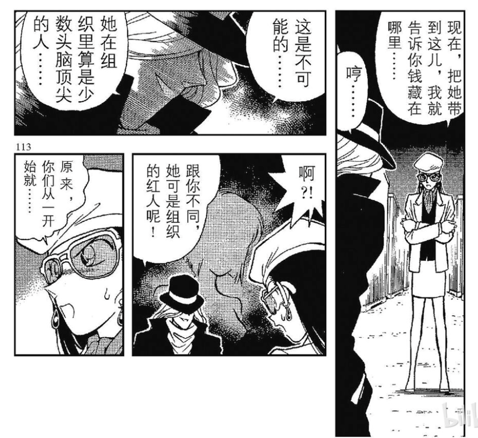
黑衣组织和宫野姐妹的设定，也是连载初期就形成的，变小后第4个案件就直奔主线而去；宫野明美其实比很多大家熟悉的角色，包括少侦三小只、铃木园子在内，登场（以及退场）要更早1.3 不同的定位，不同的对标、不同的期待
1995年4月，漫画连载到月光篇；动画档期确定，动画化正式进入筹备阶段，诹访道彦找来了老搭档儿玉兼嗣（出身东京Movie，TMS前身），连续8个月形影不离，敲定了名柯未来的方向——【《海螺小姐》式的周间剧】；
→ 通过漫画编辑作中间人，诹访部分征询了青山的意见，比如青山坚持一定要让高山南来担任柯南的CV（高山南一直在追柯南的连载，青山构思柯南的时候就想象着南姐的声音，南姐也答应青山如果动画化了一定会为柯南配音）、同意了动画制作组加入原创剧情；
→ 青山只检查了第一集原创《情人节杀人事件》的剧本（编剧是诹访的另一位老搭档，后来在其他领域大名鼎鼎的井上敏树），后续原创完全都交给了动画组；青山只提出了一个底线要求【“柯南是不会流泪的”】
→ 编剧古内一成、柏原宽司，编曲大野克夫都是刑侦剧《向太阳怒吼》时期的老搭档，该片导演儿玉进是儿玉兼嗣的叔父；分镜师中，佐藤真人来自アクセル工作室，山本泰一郎来自布姆兰工作室，两人在《新铁金刚》时期搭档过；布姆兰组是重要的外包团队，作监佐佐木惠子就属于布姆兰组；作监须藤昌朋则来自TMS本社
→ 除高山南以外，其他CV的选角主要是由诹访道彦为首的动画组决定的，有一些是直接指名，例如为工藤新一配音的山口胜平，也有一些角色是通过试音选拔确定的；高山南是CV组的组长。动画组在配音的时候也是先配第二集，确保柯南的部分无误后，再回头配的第一集
→ 诹访道彦联系到了唱片公司，儿玉兼嗣自己做了OPED的分镜；青山回忆自己一开始会关注一下片头曲的问题，但后来换的太频繁了就没再关注过，他印象比较深的就是OP1《心中动荡不安》，也很喜欢后来的OP4
2024-01-14 02:36 | 放假最快乐:南姐是名柯动画cv组的组长有确切的出处吗？2024-01-14 03:17 | 贴吧用户_J7eUEPR:回复 放假最快乐 :可以看一下高山南访谈：https://www.bilibili.com/read/cv8329201/2024-01-14 03:19 | 贴吧用户_J7eUEPR:回复 贴吧用户_J7eUEPR :其他声优的访谈里也经常提高山南的指导，尤其是一些后进组的cv2024-01-15 10:25 | 音子0806:情人节杀人事件居然是敏鬼！我要把这集再看一遍！
经典的OP1《心中动荡不安》，由儿玉兼嗣亲自进行分镜，虽然定位是子供向，但还是保留了原作中蕴含的世纪末的独特感
作为对手被设计出来的服部平次，不过不是那种贝吉塔式的对手，而是奎因式的、福尔摩斯的对手与“黑粉”（笑）
1.4 不同的定位，不同的对标、不同的期待
1996年1月，名柯动画播出，诹访道彦企划，儿玉兼嗣执导；
→ 漫画同期，服部平次登场，这是由于要配合对于广田雅美问题的修改，在动画组影响下新设计的角色，漫画编辑本来提议作为对手可以让平次的性格更恶劣一点，青山没有答应；平次的姓名来源于跟明智小五郎齐名的长谷川平次，参照漫画内容，平次其实是埃勒里奎因式的“对手”（笑）；
→ 动画最初计划是先做成半年番；青山刚昌回忆中承认，他当时是以为动画会扑街来着，还想着动画完结自己再更新主线剧情；
→ 儿玉兼嗣回忆他当时其实也不太看好这个ip，觉得第一集被害人脑袋飞掉的情节比较恶俗；动画组已经尽力在消除原著中的恐怖元素了，刀枪武器能省则省，台词一律把尸体称为遗体，连血都给改成了黑色的；但还是担心家长看到之后会换台
→ 诹访道彦回忆他当时认为达成目标本应是轻轻松松的，但事到临头面对同期那么多收视率怪物还是觉得压力山大，感觉威胁最大的就是同样在周一晚时间段的《蜡笔小新》
1996年2月，第一集TV原创《情人节杀人事件》播出，漫改新干线篇的黑衣组织设定被删掉；此时动画收视率一直不理想 ，远没有达到预期的爆火效果；漫画同期，青山创作了一个名叫“诹访道彦”的被害人
2023-10-17 03:58 | 🌱瑞琪:被吐出来了！ 老贼早期真的好惨啊，还想等动画完结再推主线，一点话语权都没有……2023-10-18 12:27 | 梦紫冰蝶:感觉73早期对于动画有种既没话语权，又有点微妙的冷眼旁观感，有点“随他们弄吧，反正估计动画也播不了多久”的感觉（虽然实际情况与他的设想相悖）

马克
9楼、12楼又被吞了？
马克一下
👀
TV漫改新干线篇和第一个原创情人节篇，后者的编剧为井上敏树，每年重大节日附近，TV组会进行一些原创企划，所以会出现同一个节日过了很多次的现象，漫画原作里基本没有这种问题；从青山本人的态度看，他对TV原创的宽容程度很高，底线要求就是柯南不流泪；但青山对漫改剧集的意见其实很多的，也许只能说1996年这个时间的，青山的脾气比较好（笑）
漫画同期连载的电视台杀人事件
2.1 儿玉兼嗣时代：三巨头的矛盾与妥协
1996年4月，【漫改月光篇播出，虽然收视率问题一时还是没有解决，不过成功赢得了很好的口碑】，支持动画能继续连载下去；对青山刚昌来说，这是他印象最深的动画篇章，感到漫画还是没有声音、动画能听到声音的感觉真好；
→ 名柯剧场版化也正式提上讨论日程，诹访道彦回忆这是他第一次和青山当面交流；青山刚昌回忆他当时一直感觉画不下去了，设计案件很费劲，想要快点完结，甚至已经带着助手们跑去拉斯维加斯玩了，但为了让自己的作品能剧场版化，咬牙坚持了下去
1997年1月，江户川柯南绑架事件动画化；漫画连载到当红歌星绑架事件，在故事中，青山安排TWO-MIX唱高达OP、柯南营救高山南
1997年4月，M1《计时引爆摩天大楼》上映，片尾STAFF表以儿玉兼嗣、诹访道彦开头，青山刚昌的名字挤在一堆原画师里；青山回忆自己贡献了一个红蓝线梗，这个原打算留给快青的；
→ 同期漫画连载到《柯南VS基德》，青山提到很早之前他曾经想过魔术快斗初期的趣闻轶事解决之后，让快斗和青子开一家侦探事务所，但随着名柯的开始连载放弃了这个想法，到后来连魔术快斗能否完结都难以确定了。
2024-01-14 02:45 | 放假最快乐:看过某个传言，那时青山去米国都城输了很多一时之间心灰意冷，不知道是不日真的2024-01-15 10:30 | 音子0806:回复 放假最快乐 :带助手一起去的，他可没有赌瘾啊
漫改月光篇，很好地发挥了动画的视听优势，通过光影效果和背景音乐传达出了漫画无法传达的情绪；在剧中，宫野明美和麻生成实是柯南的两大遗憾，是他成长道路上的基石；在剧外，成实医生更幸运一些，他的故事得以展现到观众面前，尽管是不圆满的故事，但仍然是他的故事；观众接受了这个意难平的故事，理解了作品想要传达的侦探精神，名柯获得了很好的口碑，决定在半年番的基础上继续做下去；月光篇算是整个名柯企划的转折点
2023-10-17 09:17 | 红莲容若:所以说明美最是意难平，十亿元抢劫事件本身在漫画里就在月光前面，又是主线剧情，后续看来（作为三颗银弹的交点）更是影响深远，却因为动画组的擅自改动没法和月光事件给纯动画观众留下同等的印象（两大遗憾）——月光事件是特别篇1，而十亿元抢劫事件不仅有bug还只是单集剧情，间接影响了灰原剪影登场
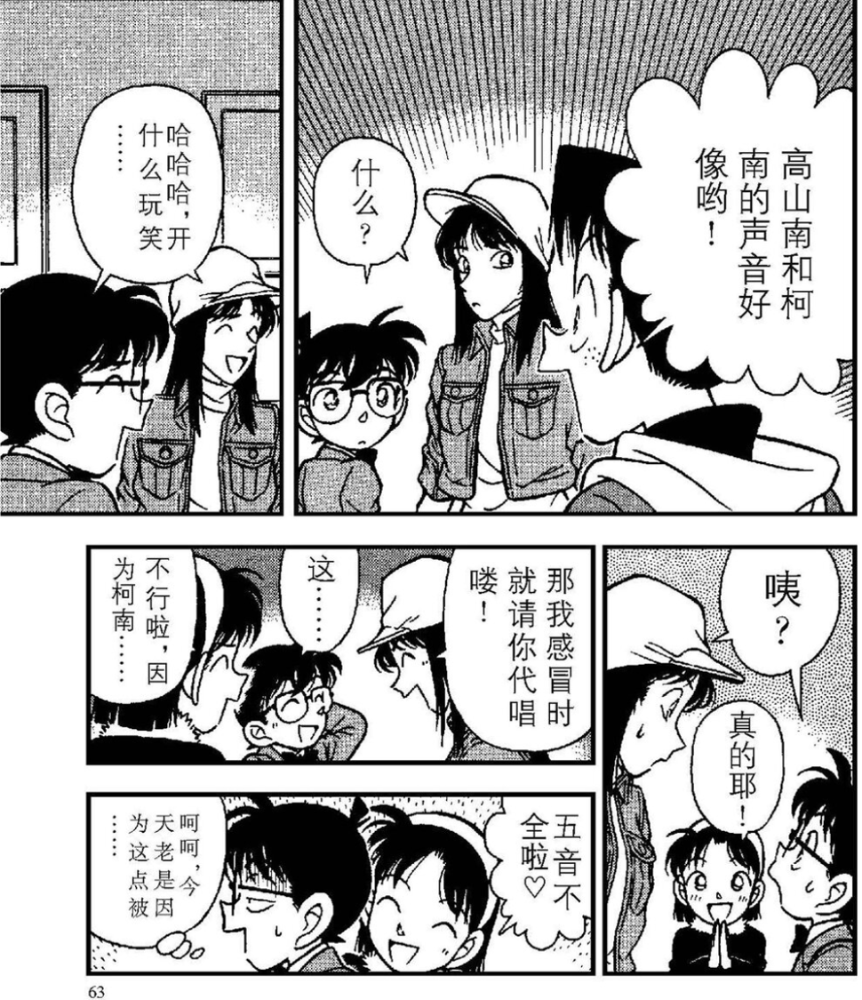
高山南和柯南的双南组合
泉水姐姐为名柯献唱的第一首OP《转动的命运之轮》，诹访道彦和BEING公司谈好了tie up合作，大多数主题曲都是由其旗下的歌手献唱的；儿玉兼嗣则亲自为OP绘制分镜；青山也提到很喜欢这个片头曲
柯南早期的故事中充满了各种命运的无常感；1996年青山萌生退意、想要半路完结名柯的时候，其实作案手法还没用完，但是想动机花的时间越来越长，也正是一个合理的动机才能赋予名柯中很多故事灵魂般的温暖与遗憾；再加上每次新登场的角色还要重新设计服饰，创作压力确实不小；青山能坚持下去，很大程度上是想在电影院看到基德
柯南早期的故事中充满了各种命运的无常感；1996年青山萌生退意、想要半路完结名柯的时候，其实作案手法还没用完，但是想动机花的时间越来越长，也正是一个合理的动机才能赋予名柯中很多故事灵魂般的温暖与遗憾；再加上每次新登场的角色还要重新设计服饰，创作压力确实不小；青山能坚持下去，很大程度上是想在电影院看到基德
2023-10-20 10:11 | 上弦之叁✨:怪不得后面动机有些很离谱

2.2 儿玉兼嗣时代：三巨头的矛盾与妥协
1997年6月，台湾引进《名侦探柯南》TV动画，诞生了经典的台配柯南；但是台配版出现了很多翻译错误，例如片头台词“唯一看透真相的是”，其实应当为“看透唯一真相的是”；同时台配漏掉了一些片尾彩蛋的配音
→ 同期，俏佳人公司拿到了代理权，从1999年开始，台配柯南被引入到大陆；由于台配柯南的广受欢迎，长春出版社才开始引进原著漫画，正式出版已经到了2002年；俏佳人版柯南只引进到了TV207集（不包括吴越同舟及之后的漫画剧情），大多数人的童年回忆指的就是俏佳人版柯南
1997年9月，【灰原哀在漫画中正式登场，青山刚昌回忆是从1994年开始一直拖延，到了不得不登场的时候了】；
→ A药名单中首次出现羽田浩司，名字来源于1996年夺得七冠的羽生善治，以及另一位将棋名人谷川浩司；不过严格来说，完全以羽生善治为原型的角色是弟弟羽田秀吉，青山对羽生顶着睡乱的头发成为七冠王的场面印象极深；羽生善治和他的家人都很喜欢看柯南，比较喜欢的角色是柯南和平次；后面青山在作品中抄了一局将棋棋谱，羽生看的时候一下子反应过来，那是几十年前他输过的一局将棋
→ 同期登场了大量经典角色，包括TV原创龙套转正的高木涉；但由于缺乏沟通，青山刚昌以为的高木涉和儿玉兼嗣以为的高木涉不是一个龙套，导致最后创作出来的角色脸型相似肤色发型都不同，儿玉在任时两边一直各画各的，就这么持续了6年
1997年12月，TV原创综合医院杀人事件，成为收视率最高的原创剧集（后来的漫改竞技场、蓝色古堡要更高），本集编剧为宫下隼一，作监为青野厚司；漫画同期连载到竞技场篇，此时的背景是日本足球走出多哈惨败的阴影，首次进军世界杯，因为赢球，柯南在博士家高兴地上蹿下跳；竞技场篇动画化的时候，98年法国世界杯已经结束，日本队的成绩并不好看，因为输球，柯南在博士家桌子上气的打滚。
儿玉版高木涉和青山版高木涉
2.3 儿玉兼嗣时代：三巨头的矛盾与妥协
1998年9月，此时动画漫改进度已经超过19卷了，但因为广田雅美问题跳过了所有灰原哀出场的剧情；
→ 诹访道彦再次发挥了自己敏锐的嗅觉，他跟儿玉兼嗣说“灰原这个角色看起来很有故事的，这么一个女孩加入到故事中来，并不是少侦多了一个孩子那么简单，而是庞大黑衣组织背景下的关键人物”；
→ 儿玉兼嗣选择把重心转到剧场版， TV组导演变更为山本泰一郎（山本出身布姆兰工作室，主张在主线问题上尊重原作者意见），年底安排广田雅美又抢了一次银行（编剧为宫下隼一）；
→ 作为转折的一部分，高山南亲自编曲献唱的OP5《 TRUTH～A Great Detective of Love～》取代了坂井泉水同样经典的OP4《转动的命运之轮》，灰原哀的回眸率先出现在了OP画面当中；
→ 另一方面，从1998年开始，剧场版STAFF表中诹访道彦的名字固定在首位，儿玉兼嗣固定在结尾
1999年1月，【灰原哀终于在TV中正式登场，动画收视率逐步走上巅峰】（前后连续四个多月收视率在20%以上）；漫画同期更新到与黑衣组织的再会，完善了黑衣组织的设定，并画出了【青山刚昌一直想画的眼睛超人名场面】；
→ 青山参考了弟弟的意见，指名请配过绫波丽的林原惠美担任灰原哀cv；林原惠美第一次配音时花了很大的精力，青山专门写了角色说明，诹访道彦告诉林原，要把握住灰原想要融入柯南和少侦身边的心态，以及要理解灰原为什么想要融入柯南身边；高山南坐在林原惠美旁边，耐心地和她讲述故事的脉络、讲述她所不知道的事情，让她感到无比可靠；林原惠美也通过自己的努力一点点把掌控了角色的厚度。
2023-10-23 02:46 | __灰原那傢伙:南惠锁死
高山南亲自编曲献唱的OP《TRUTH》；这同样标着TV动画进入了一个新的时代，山本泰一郎接替儿玉兼嗣成为TV组监督，但儿玉兼嗣仍然保留总监督的职务
灰原哀的登场标志着名柯剧情主线终于有了实质性的推进（真第一集补充第二次搜查时间为变小后两个月，是少见的确切体感时间）；另一方面，也标志着名柯TV动画走上了黄金时代的巅峰，最高取得了23.4%的收视率
林原惠美当时已经有了很多代表角色了，不过请她来配名柯的直接原因还是青山弟弟喜欢的EVA组；青山有两个弟弟，一个继承了家业，另一个则是一名医生
2023-11-04 20:15 | 澸蒽就是了🍺:第一张图最左边是致敬谁2023-12-16 13:42 | FujimotoNaoki:回复 澸蒽就是了🍺 :渚薰，白马探
顶
当年的南惠
2.4 儿玉兼嗣时代：三巨头的矛盾与妥协
1999年4月，M3《世纪末的魔术师》上映；漫画同期连载到危命的复活，两边一起用了新柯同框的梗；
→ 漫画中兰哀第一次见面，不是特别友好；动画此时兰哀还没有见面，剧场版是兰哀第一次同台。林原惠美回忆道，刚开始配音的几个月，她是一直坐在高山南旁边的，第一次同台的时候，林原去得迟了一些，发现和佳奈酱（小兰的cv）坐在高山南旁边，突然想到，啊，原来那是不属于自己的位子，原来还有自己不知道的事情，一个人默默坐到了远远的，但依旧能望见南姐的地方；后来，绪方贤一（博士的cv）会在旁边特地多占一个位置，招呼林原说“我帮小哀提前占了这个位置哦”，还会主动和她讲些冷笑话调节气氛；大谷育江（光彦的cv）也主动搬过来陪她，还特地问青山能不能让光彦也喜欢小哀；
→ 与M1M2不同，M3开始剧场版不再设置“沉睡的小五郎”环节，后续只有M17、M21、M26还保留有这一桥段
→ 青山对于能在大银幕上看到会说话的基德感到非常激动，他回忆当时以为这就是最后一部剧场版了，努力争取改了很多分镜，改到儿玉兼嗣可能都嫌烦了的地步；同期，《魔术快斗》久违地连载了新篇“漆黑之星”，补充了快新初遇
1999年10月，漫画连载到吴越同舟篇，光彦想表达自己对小哀的爱慕，却被柯南无情打击，小哀鼓励光彦发挥好自己的优点，故事结尾，小哀看着开心的三小只露出了微笑，柯南也笑着注视着这样的小哀；
→ 青山原设定中的光彦其实是类似骨川小夫那样有点讨厌的性格，但是青山一直觉得大谷育江的声音很可爱，所以笔下的光彦也变得越来越可爱；另一方面，虽然否认光彦的名字来源于浅见光彦，但青山还是一点点地塑造光彦的早慧与努力，在访谈中提到，光彦长大以后会成为很受欢迎的人；
→ 同期动画连载《月亮、星星与太阳的秘密》，不知为何这个早期剧集的动画化从儿玉时期拖到了山本一期，为了圆灰原哀不在场的问题还出现了新bug；青山是很喜欢这个案件的，多次提到【这是他最最用心下功夫的篇章谜题】，他花了很多时间设计暗号，以至于责编都等得睡着了
2000年1月，再会篇动画化，高山南回忆配音的时候忍不住想吐槽“为什么是花花”，下意识地和林原惠美对视了一眼；漫画百卷人气投票时，再会篇眼睛超人的名场面也是绝对性的第一。
2023-10-16 01:49 | 🌱瑞琪:怪不得老贼要在古董盘的漫画里非要点出小哀当时还没来这一点，让动画组自己打自己的脸呢，原来他记仇记了这么多年啊2023-10-16 09:02 | earthkid123:回复 🌱瑞琪 :红修篇后面的寻找玛丽亚篇中也提到2023-10-18 10:55 | 156wwwww28:w大谷育江可是乔巴和皮卡丘的声优啊，怎么可能不可爱2023-10-18 12:40 | 梦紫冰蝶:73对很多“小事”真的非常记仇（）2023-10-23 15:02 | Tottyu:绪方贤一和林原合作也非常多，大谷育江也是，场外关系很好。

世纪末的两次兰哀同台；早期作者一直在错开兰哀的出场机会，狭义上的雪莉篇（到再会篇为止）两人一直没有见面
M3也是基德第一次出现在剧场版的银幕上，青山本人当然是很高兴的；不过和前述两个问题类似，基德知道新一身份也以漫画剧情为准，漆黑之星篇快斗和新一有过初遇，在随后的几次对决中自然而然确定了柯南就是消失的新一
大谷育江和林原惠美是宝可梦组的搭档（笑）不过实际操作中柯哀光三人的关系表现得更像是父母和大儿子之间的感情
充满了谜团的《月亮、星星与太阳的秘密》，不过青山在问答中提到，阿里定子不是黑衣组织的BOSS
青山一直想画的眼镜超人名场面


dd
作为新粉一直很好奇背后的故事，奈何ip太久远不知从何下手，有这种介绍文章真是太好了，要总结出这些得看多少访谈啊，lz辛苦了太感谢了
2023-10-16 01:28 | ktbk-:话说9楼和12-17楼好像还是吞掉了呢
哇想看这种帖子（文）很久了，终于等到这贴！！楼主加油！！（已经收藏了）


2.5 儿玉兼嗣时代：三巨头的矛盾与妥协
2000年2月，漫画连载到神秘乘客；编辑部问这个叫赤井秀一的是谁，青山说是FBI，编辑们一脸震惊；青山检讨他觉得大家震惊的样子会很有趣所以故意没有提前说，以后不会这样了；喝醉了酒之后，青山说既然叫秀一就请池田秀一来配音吧，没想到后来动画组竟然真的请到了池田叔。
2000年3月，山本一期最经典TV原创、诅咒假面的冷笑上映，编剧分镜演出均为越智浩仁一人包揽，作监青野厚司；
2000年4月，M4《瞳孔中的暗杀者》上映，票房略有下滑；动画同期连载到危命的复活；
→ M4中小哀的台词前半段“让她保持这样别想起过去……”，本来是古内一成的玩笑话，但因为制作组都很喜欢所以真的被定了下来，这个事让青山刚昌特别烦恼，为了给这句话收尾大家想了半天才想到后半段“我就可以永远和你……”；
→ 青山提议了喷水池名场面（他在拉斯维加斯玩的时候看见的），得到了儿玉的首肯；【儿玉表示期待今后剧场版中动作戏的成分再增加一些，发挥好电影的优势】
2023-11-04 20:39 | 澸蒽就是了🍺:这时候已经牛到随便指名cv了
cy
越智浩仁的代表作，诅咒假面的冷笑；越智浩仁是动画组的多面手，他在担任其他岗位的时候会使用化名，例如於地纮仁（读音与越智浩仁相同），本文统一以本名越智浩仁称呼他
M4瞳孔中的暗杀者；小哀的这句台词对人物形象的作用见仁见智，不过有一定是可以肯定的，青山苦恼的肯定不是单为了这部电影，而是担心有观众带着这句话去理解原作，可能会反过来干扰漫画的创作
早期剧场版其实是一个较大的单元剧，在单元剧内讲好一个故事，然后电影结束一切人际关系归零；优点是创作空间更大更自由，缺点是观众看清这点后不是特别乐意为好故事贡献票房；从M4开始，剧场版开始想办法转型，想把动作戏一点点加多起来，发挥电影载体的优势
早期剧场版其实是一个较大的单元剧，在单元剧内讲好一个故事，然后电影结束一切人际关系归零；优点是创作空间更大更自由，缺点是观众看清这点后不是特别乐意为好故事贡献票房；从M4开始，剧场版开始想办法转型，想把动作戏一点点加多起来，发挥电影载体的优势
2023-10-17 01:01 | CoAi_4869:所以前期剧场版的新兰戏对青山来说不会对原作的理解产生影响吗？2023-10-17 23:38 | 贴吧用户_J7eUEPR:回复 CoAi_4869 :这里青山的真实想法应该就是不要给小哀乱加台词，诹访道彦后面反思过，小哀的地位很微妙，不知道哪一句话就会成为伏笔。制作组非要加这句话，是因为他们对小哀的定位和认知和青山不一样，青山又不太方便公开反对2023-10-17 23:45 | 贴吧用户_J7eUEPR:早期剧场版很多故事是围绕新兰戏展开的，在单元剧内逻辑自洽。如果故事讲的比较好的话，青山也不反对各种原创剧集，和原作区分开就行。M4这句台词的问题是它跟故事主线没关系，就是让小哀唐突说了一句【让她保持这样，别想起来比较好】，删掉了对故事剧情没有影响的，留下来反而会对人物塑造产生影响2023-10-29 12:58 | 勇敢ºº:回复 CoAi_4869 :前期剧场版的分割感很强烈的，基本就等于同人作品那种
编辑部被吓到了是因为这个系列第一话赤井秀一是作为路人登场的，人物介绍上写的是乘客，突出一个平平淡淡才是真。青山后续反思过自己，这种重大的剧情转折和改变一般不再会瞒着漫画编辑了。
贝尔摩德三选一的氛围塑造的好，不仅仅是因为朱蒂=贝姐的障眼法，更是因为当时的主线剧情非常压抑，观众一直担心三选三黑。赤井秀一最初是刻意往黑方来写的，左撇子、之前刚把长发剪了，某些台词有点像暴力痴汉，甚至早期詹黑论的一些论据，也可以解释为是把赤井秀一往黑方带的手法
贝尔摩德三选一的氛围塑造的好，不仅仅是因为朱蒂=贝姐的障眼法，更是因为当时的主线剧情非常压抑，观众一直担心三选三黑。赤井秀一最初是刻意往黑方来写的，左撇子、之前刚把长发剪了，某些台词有点像暴力痴汉，甚至早期詹黑论的一些论据，也可以解释为是把赤井秀一往黑方带的手法
3.1 儿玉兼嗣退场
2000年5月，漫画连载到黄金别馆篇，【首次提及乌丸莲耶，距离第一次提到“那位先生”的设定过去了一年多一点】；动画组将漆黑之星篇和黄金别馆篇合并成《被召集的名侦探》特别篇，放到了2001年的新年，高山南和林原惠美分别为青子和红子配音，但删掉了红子想使用魔法的情节；
→ 稍晚些时候，山本泰一郎导演的OVA1发行，改编自魔术快斗中的宝刀争夺战，并且把柯南主角团也加了进去，让柯南、基德、铁剑开展了一场三方对决；为了兼容YAIBA世界观，本集设定是柯南在小泉红子的暗示下做的一个梦，所以小兰的发型方向和平时相反（笑）
2001年4月，M5《通往天国的倒计时》上映；TV同期将神秘乘客动画化，【柯南对小哀说不要逃避自己的命运】，两边一起用了30s爆炸的梗；漫画同期连载到疯狂足球迷，【小哀回应说不会逃避自己的命运，柯南承诺会保护小哀】；林原惠美在访谈中提到想请青山刚昌再新创作一个角色来给小哀幸福，被青山拒绝。
→ M5放映前做了一个灰原疑似背叛的预告片，把青山吓了一跳，因为没人和他说过这个事情。其实这个算制作组的恶意剪辑，故意不说小哀在和谁打电话、在说什么内容，暗示小哀在联系黑衣组织出卖柯南。后来那个陈年老谣“毛利兰去死吧”就是这个问题的后续，林原惠美接着“电话内容是什么”这个梗跟和佳奈酱开的玩笑，被部分极端读者理解为林原惠美想要谋杀山崎和佳奈
→ M5中预言了部分角色未来的长相（后来OVA9采用了类似的设定），但青山在后续的访谈中提过，光彦和元太长大之后都会变帅的；在谈及园子发型的时候，青山明确说明剧场版和原作漫画是相互独立的
2023-10-17 02:32 | lredbeanl:重点：女王请73再新创作一个角色来给小哀幸福，73拒绝2023-10-18 12:47 | 梦紫冰蝶:早期动画组感觉挺喜欢往哀身上加点恶役元素的……2023-10-22 07:34 | ffffe的老巢:果然73也不满m5的园子未来造型。。后来绿帽之拳里面园子去掉发箍真绝美，电影恶搞成那样还给小兰垫脚真恶心。。2023-12-26 22:43 | 队友thet☞:回复 ffffe的老巢 :但其实感觉73自己对园子造型设计也不上心23年初对话日在观众反映下才决定再让园子披发一次
乌丸莲耶就是黑衣组织的BOSS。组织有BOSS是一开始就想好的设定，乌丸莲耶这个BOSS形象大概在再会篇前后也构思好了，当时的青山收伏笔的速度没有后面那么拖，至少没想过作品竟然真的要连载三十年。
有关组织BOSS的更多分析猜测，也欢迎看一下我在米花学园吧发的主线分析文章哦~
有关组织BOSS的更多分析猜测，也欢迎看一下我在米花学园吧发的主线分析文章哦~
2023-11-18 20:51 | 贴吧用户_7PX2yAy:专门提到西洋棋和扑克牌诶！
中森青子（高山南役） 小泉红子（林原惠美役）
某种意义上，快青对标的其实是快柯
某种意义上，快青对标的其实是快柯
悲（）又被抽走8层楼，图片和文字都发不出来；一条一条申诉恢复每天有申诉上限的，大家有什么更好的办法吗？
2023-10-16 09:37 | 🌱瑞琪:我看着楼层出现，然后又没了2023-10-16 10:07 | 贴吧用户_5RZ9N4Z:好惨啊
要不知乎发吧2023-10-16 10:20 | 冬馬和紗℃:长篇分析被吞几乎不可避免
昨天蹲的帖子被刪了，今天好歹能多看點2023-10-17 05:45 | 不过期月饼♬:知乎发文可以无限修改，或者做b站视频2023-10-17 06:02 | 贴吧用户_J7eUEPR:回复 不过期月饼♬ :感谢支持~以后整理好了可能会发其他平台~贴吧的优点是能逐层评论，还是想听听大家的意见~2023-10-17 06:03 | 贴吧用户_J7eUEPR:好像吐出来了一些，晚上接着看能不能贴完~也希望大家多评论一下哈，好像发帖太多、评论太少会被系统判定为广告贴的2023-10-17 06:21 | 不过期月饼♬:回复 贴吧用户_J7eUEPR :知乎的修改方式还是很舒服的，不过柯南在知乎热度最近不行，没有热搜的话看的人挺少。我感觉b站的二次元密度很高的，可以在贴吧先发哇收一些反馈统一做个视频再去b站上发

第一部OVA；发行OVA是《少年Sunday》的一种营销手段，大部分OVA就是单纯的TV原创，OVA1、OVA4、OVA12改编自青山的其他作品，只是把柯南主角团也加入其中
M5预告片，也许是开了剧场版预告片诈骗的先河？青山是真的被吓了一跳
抛开预告诈骗这种不愉快的事情，在2001年4月这个时间点，青山是很努力地在配合剧场版和TV动画。剧场版揭露了灰原哀遭到追杀、渴望容身之地、又害怕牵连他人的悲惨命运，动画化神秘乘客篇柯南扭转了这种命运，漫画疯狂足球迷篇小哀也回应了柯南的心意，愿意和他一起去战胜这种命运
3.2 儿玉兼嗣退场
2001年5月，漫画连载到中华街篇，提了一嘴“有些白痴制作人为了赚钱，违背了原著精神，在剧本里加了一些毫无意义的恋爱情节”；4月神秘乘客动画化的时候，TV组将小哀的台词从“你一脸想碰到什么案子似的表情”改成了“有段时间没见到她，寂寞了？”
2001年8月，网中谜动画化，【勇气是挺身而出正义的字眼】是青山刚昌反复提到的、最喜欢的一句台词；不知为什么，动画组把柯南“比起海豚，鲨鱼……”这句台词给了阿笠博士，这里柯南是明显有没说完的话的；同时小哀看的电视节目从《泰坦尼克号》变成了《警察故事》；漫画小兰在说出这句名台词的之后，有点害羞地脸红了，所以才找补道新一在的话可能会这么说，其实这句话本身应该是她自己的感悟；动画更改了相关分镜，真的变成新兰之间心意相通，作为忠实信徒的小兰大义凛然地替新一说出这句名台词，折服了在场所有人；漫画结尾，小哀说出自我介绍后，海鸥起飞，柯南若有所思地看着兰哀二人；动画结尾改为，海鸥起飞，小哀自我介绍，小兰落落大方地回应小哀“也请你多多指教”
→ 稍早，漫画连载到纽约篇，小兰的观念就是幼稚但朴素的善良，很多自以为勇敢的人反而不懂，这种感悟并不是因为新一而形成的（有别于后面魔怔的窗帘篇）；同期，漫画连载到光彦的森林迷失记，沼渊己一郎可恨可悲的遭遇其实是在反衬小哀自身的救赎，没有容身之地的沼渊不得不用杀人来抑制自己的恐惧，小哀在面对恐惧时却主动放弃自己无比珍惜的容身之地，选择挺身而出牺牲自我的道路，这是一种难能可贵的勇气；江户川柯南理解了小兰、理解了小哀、甚至能理解沼渊己一郎，理解他们内心的动摇，尽力为所有的人兜底，这是他神性的体现；漫画网中谜篇的本意并不是小哀被小兰的玛丽苏光环折服，而是小哀被【勇气】二字点醒，意识到“鲨鱼”与正义并不对立，也有资格去追寻、去守护小小的幸福；当小哀感叹自己的组织雷达变得迟钝时，柯南却露出了开心的笑容
2001年10月，儿玉兼嗣彻底离开TV组，只保留在剧场版制作组的职务；TV组此后不再设总导演一职，仅保留山本泰一郎一位导演
2023-11-18 20:53 | 贴吧用户_7PX2yAy:警察故事。。。2024-01-15 10:48 | 音子0806:儿玉终于滚蛋了…
其实大部分时候能够看出，TV组对原作漫画的修改是有一定逻辑在的；但神秘乘客篇的这句修改显得非常莫名其妙，原句在逻辑上是通顺的，而且指向的是案件（照应了后面真的出现了案件），本身是没招谁没惹谁的台词，不确定为什么这里要改一笔
2023-12-16 10:19 | 贴吧用户_aJNC1A4:动画组有时候对于加强观众”新兰的双箭头“的印象有着莫名的执着，我算是明白为什么会有爱情疯子的洗脑包出现了
中华街篇的一声吐槽
【勇气是挺身而出正义的字眼】是青山自己最喜欢的台词；只是有些人对【勇气】的理解偏到了其他地方去了，抛开了【挺身而出】和【正义】两个单词
沼渊己一郎的可叹命运是侧写【容身之地】这个概念；很多读者常常误会的一点是，灰原哀从来不缺少【勇气】；第一次登场的大学教授杀人事件，柯南和小哀都推理出了琴酒一行正在附近等着，小哀却没有一丝害怕，那时她没有什么可牵挂的；反而是再会篇开始，小哀做噩梦时会梦到柯南和三小只，正因为珍惜这个【容身之地】，才有了软肋，宁可牺牲自己也要保护他们；柯南给她的不是【面对组织】的勇气，而是【别害怕牵连到我，我们一起对抗组织】的底气
2023-10-18 12:54 | 梦紫冰蝶:非常赞同！哀其实不缺直面组织威胁的勇气，她并不惧怕死于组织的追杀，她真正害怕的是让身边人陪自己一起承担黑暗的现实2023-10-20 07:43 | 饼干和熊:这段话说得太好了。很多人恶意地曲解哀的想法，指责她胆小害怕，它们只是看一眼再会篇都不会有这种论断。她只是怕连累周围的人，真到她一个人的时候怕过吗？独自面对琴酒伏特加，不仅冷静甚至还能在言语上有来有回，身中数枪硬是一个字没吐出来。说她懦弱的当真是没有良心。2023-10-23 02:58 | __灰原那傢伙:最后一句要看哭了2024-01-13 11:39 | 贴吧用户_Q4eCR5W:回复 贴吧用户_J7eUEPR :看到一堆☁️在大肆宣扬哀胆小我真的会气死，妈的

3.3 儿玉兼嗣退场
2001年11月，来自芝加哥的男子动画化，因为剧中赤井秀一说了特别可怕的台词“是啊，我会让她后悔甩了我的，用血和泪……” ，林原惠美担心地问高山南，“还好吧？柯南，赢得过他吗？”，高山南宽慰道“别担心，他是站在我们这边的”；
→ 同期漫画连载到1200万人质篇
2002年3月，漫画连载到女儿节篇，首次提到灰原哀之父名为“宫野厚司”，名字来源于动画组总作监青野厚司；动画同期连载到犯罪的遗物篇，柯哀兰干净的香味名场面，作监正是青野厚司，他的画风以贴近青山漫画而闻名；
2002年4月，M6《贝克街的亡灵》上映，口碑票房双丰收；
→ 本片的编剧野泽尚是主动找到诹访道彦的，理由是“孩子很喜欢柯南”，他读过原作漫画，对角色的把握相对准确，青山刚昌提到自己对剧本的修改比往年还少，就给灰原改了一句“你就是我们的福尔摩斯”，有争议的主要是儿玉兼嗣的分镜；
→ 野泽尚提到自己编剧的目的是【“为自己的孩子而创作”，想讲述一个父与子的故事，还期待今后再次为名柯编剧】；然而，两年后，野泽尚离奇地在办公室自杀，只留下了两个疼爱的孩子；在他身后，野泽尚的妻子围绕M6著作权的问题打起了官司
2023-10-18 01:42 | 为了gre:原来“你就是我们的福尔摩斯”是青山的手笔，太好磕了2023-10-21 09:02 | 就是觉得好6:离奇自杀…2023-11-04 20:20 | 澸蒽就是了🍺:野泽尚要活着的话后面好多年的剧场版绝对要改观很多2023-12-16 10:23 | 贴吧用户_aJNC1A4:野泽尚真的可惜了2024-01-15 10:51 | 音子0806:都为了孩子主动接工作，却自尽了，唉

如果说早期的新出是温和、朱蒂是神秘、秀一就是一脸坏人像（笑）；但其实三选环节有一些规律，比如每次三选一会有一个人用真名，用真名的不是黑方；每次三选一会有一个人冲着小学生那边过去，监视小学生的那个不是黑方
2024-02-22 22:16 | 笑面hwh:嘶，这个秀一画的……很难评
青野厚司是早期少数主动向青山画风靠拢的作监，将青山原画的魅力较好地展现在了动画里
2023-12-18 04:42 | 轮回云雀:好漂亮的线条和阴影2023-12-27 03:04 | 小石头小小😈:不愧是亲爹
cy
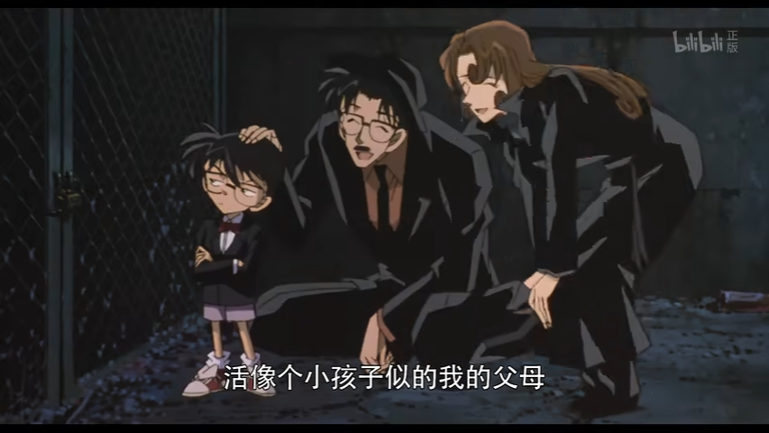
M6算是诹访道彦推动下剧场版转型的一次尝试，讲述的是一个【父与子】的故事；由于不并入正史，反而能在吃透角色的基础上尽情发挥创造力，算是早期剧场版的一个巅峰；不过，由于种种原因，M6的特殊模式难以再现了3.4 儿玉兼嗣退场
2002年12月，读卖电视台门口立了一尊柯南像以纪念名柯ip对读卖电视台的贡献；
→ 同期宫下隼一编写的一集TV原创中，小兰的翻盖手机被踩坏了引发了大量极端粉丝投诉，山本泰一郎只得在即将动画化的1200万人质篇中让柯南再送给小兰一部一模一样的手机；【可能是为了避免麻烦，后续无论是动画组还是原作漫画都在避免提到小兰换手机的事情】
2003年4月，M7《迷宫的十字路口》上映，青山提供了平次初恋是和叶的梗；漫画同期更新到满月决战；
→ 儿玉兼嗣之后就离开了柯南制作组，进入了数年的沉寂期，没有再执导其他作品，报道中用“降板”来描述他的离职，但没有解释具体原因；2006年，儿玉兼嗣和诹访道彦短暂合作，执导《结界师》，但因为收视率不理想而被腰斩，后续两人没有再合作过；儿玉兼嗣的再下一部电影要到2019年的《城市猎人》了
→【从下一步剧场版开始，由山本泰一郎接任监督， STAFF表以“原作青山刚昌”开头、然后依次为脚本家某某、企划诹访道彦】；
→ 同期的访谈中，青山和南姐讨论，接下来想要画柯南和小哀在伦敦的故事，不仅仅是M6中虚拟的伦敦，而是以现实的伦敦为舞台；稍早一点的问答中，【青山表示结局已经决定】，但被问到柯南打算出多少集时诚恳地回答“我不知道”
2023-10-17 07:46 | 贴吧用户_QSR9a6R:儿玉那么爱乱改乱加戏哪个作者受得了他，简直是名柯战犯2023-10-17 09:21 | 蓝月哀:小兰的手机被踩坏，极端粉丝为什么要投诉啊？是因为这个细节会跟漫画剧情衔接不上，还是单纯地被害妄想发疯“总有刁民要害我们小兰”啊？2023-10-17 21:21 | 猫兔💕:所以3202年了兰内酱还在用翻盖2023-10-18 09:54 | 地方法规和0:回复 贴吧用户_QSR9a6R :厉害了，把柯南这个ip发扬光大的功臣说成战犯，62023-10-18 10:21 | 贴吧用户_QSR9a6R:回复 地方法规和0 :发扬光大的前提是扭曲创作者意图？那么厉害干嘛不自己创作去2023-10-21 11:09 | 虬空:回复 地方法规和0 :真要说发扬光大名柯ip，应该是指的TV化以及电影化这个行为吧，而不是说肆意改编了人物关系的具体哪一部或几部的电影，虽然单从电影的呈现效果来看，是很优秀的作品，但如果总监督真的有想发扬光大这个ip，才更应该基于原作去设计和布局，2023-10-21 11:10 | 虬空:前几期的剧场版很明显是为了赚快钱，加快吸金速度，把主角间的感情直接上升到同生共死的人生伴侣了，和原作的割裂感是原作读者比较难以理解的，所以对整体的名柯塑造而言嘴他一句战犯，我认为其实没有问题，不过功过能否相抵得留到后人来评判2023-11-04 20:51 | 澸蒽就是了🍺:到现还在还没有柯哀伦敦故事，不知道要等到什么时候2023-11-04 23:03 | 贴吧用户_5N451RG:回复 澸蒽就是了🍺 :其实，伦敦篇的草地女王就是灰原啊，毕竟the winner is miss glass2023-11-04 23:05 | 澸蒽就是了🍺:回复 贴吧用户_5N451RG :好吧，但还是希望将来看到一次小哀去母国的场面，当然必须柯南陪同（千万不要出现某女主）2023-12-18 03:59 | 贴吧用户_aJNC1A4:儿玉的是非功过，哪怕是名柯完结也说不清的2024-01-14 03:36 | 放假最快乐:说实话抛开cp滤镜，名柯早期的几部剧场版动画真的很精彩，我小时候还买了影碟收藏。儿玉导演的是非功过不应该只以cp来看待。柯哀粉感觉儿玉指导下改动影响人物形象，但不能因此完全抹沙儿玉对名柯动画的贡献2024-01-15 10:57 | 音子0806:回复 地方法规和0 :功臣笑死，这一顿看下来论功臣也是諏访，轮得上他个不学无术的关系户吗？再说了动画是集体工作，不如感谢一些那些动画人2024-01-15 10:59 | 音子0806:回复 放假最快乐 :儿玉导演水平又不咋样，没必要硬夸，就说立川让，分镜、节奏、整体把控比他强多少倍2024-01-15 11:26 | 放假最快乐:回复 音子0806 :不要什么都以柯哀粉的标准来看待，儿玉一点功劳都没？名柯早期几部剧场版这个儿玉导演是挂名的不做事。我都说抛开cp滤镜看待儿玉，这层还说儿玉是展饭此类言论和对家的极端sr有什么区别。2024-01-15 11:30 | 放假最快乐:回复 音子0806 :当然呢立川导演m26柯哀粉大都满意，抛开cp倾向，我觉得m26的动作戏很一般还不如m20和m22，虽然m22也是立川指导的，但事实即使如此。 立川站柯哀＝好的优秀导演，儿玉时期剧场版偏向sr＝儿玉一点都不行，差不多得了cp入脑看的太低。2024-01-15 20:16 | 音子0806:回复 放假最快乐 :谁以柯哀眼光来看了？怎么看出来的2024-01-15 20:18 | 音子0806:回复 放假最快乐 :你就说你懂不懂絵コンテ、メーガーデザイン、中割り是啥吧，你但凡懂一个也不会说我是以柯哀粉的眼光看的2024-01-15 20:21 | 音子0806:回复 放假最快乐 :你知道一部动画至少要有多少张原画吗，你知道原画是什么动画是什么吗，你知道越轴是什么吗，你知道如何合理越轴吗，你知道美术监督是干嘛的吗，你知道3D机械设定是干嘛的吗。我跟你说动画制作你跟我说cp2024-01-15 20:24 | 音子0806:回复 放假最快乐 :所以你告诉我儿玉一个关系户功劳是在哪里呢？难道仅仅因为他没搞砸这个ip？柯南系列监督的水平本来在业界就是较差的，好容易拉个打工超人立川来，还要被不太懂动画的人拿去跟儿玉比，我只是觉得立川很无辜哦2024-01-15 20:27 | 音子0806:动作戏好不好不是一个导演素质的体现，而且也不是导演一个人决定的哦，你以为是拍电影呢2024-01-15 23:36 | 放假最快乐:而且你觉得m20 m22动作戏好是好在哪里，比较夸张吗，动作幅度比较大吗，要不你上阿b学点动画鉴赏的知识再来呢
回复 音子0806 :功劳都是立川的他一人包含完全部，儿玉只是没搞砸剧场版。m22剧场版也是立川指导的动作戏显然强过m26，只不过票房不如鱼影，不是cp入脑怎么不吹m22的动作戏？只说立川指导m26大放异彩，其他几部的都记不得了？立川指导m26最大亮点就是卖柯哀但掩盖不了动作戏相对之前退步的事实2024-01-15 23:41 | 放假最快乐:回复 音子0806 :你不是以cp脑看待是啥？吹立川指导的m26票房高，还是在此吧别不承认， m26动作戏就是不如m22抛开cp来看是事实，m22同样是优秀的作品，怎么不见你在此吧吹立川指导的22呢？只吹m26是吧2024-01-15 23:46 | 放假最快乐:回复 音子0806 :2024-01-15 23:49 | 放假最快乐:回复 音子0806 :还超人立川？2024-01-15 23:51 | 放假最快乐:回复 音子0806 :怎么会感觉 m26的动作戏＞m222024-01-15 23:58 | 放假最快乐:儿玉只是导演功劳不能完全算他头上，只是没搞砸，你敢说名柯前期早期几部剧场版是像你说的这样没搞砸而已，难道前期早期几部剧场版没有任何精彩之处？ 到了立川又是请来的超人，好像说的整个动画组的功劳就都是他导演的其他人都没功劳，到了别儿玉就是他只是没搞砸而已。2024-01-15 23:59 | 放假最快乐:你要以cp看待剧场版就别不承认，此吧就是柯哀吧，有啥不好说的？你就是啥事都以cp优先，但也别选择无视立川指导的其他剧场版同样很优秀，名柯的剧场版动画并不只是卖柯哀才算是优秀作品。
读卖电视台本部就是M21开头被炸掉的那个建筑物，编剧大仓崇裕还专门来柯南像前圣地巡礼了一次
这里青山是比较冤的，他创作的时候没想太多，就是挑了一款符合时代背景的直板大哥大，园子一开始的手机也是直板机。TV动画监督也没想太多，改成了当时比较新潮的粉色翻盖机（1999年刚好是现代翻盖手机发明的那一年）。TV原创编剧也没想太多，悬疑推理作品本来就经常Ban掉手机，柯南自己的手机都不知道丢掉坏掉多少次了。结果最后酿成了一个大麻烦。
因为这个手机引起了名柯宇宙的时空危机。青山漫画主线中，时间是有限且不断流动的；TV动画原创中，时间是循环且周而复始的；在各方利益妥协下，时间轴变成了芝诺悖论式的、螺旋前进的、无限接近某个时间点却永远到不了这个时间点。
涉及到小兰的手机时，三种时空观开始纠缠在一起。如果按单元剧一贯的风格，这集结束下一集开始，手机这种弱主线相关的物品会原地复活（类似故事中经常毁坏的各种地标建筑）。但复活的手机是否还是新一最初送的手机，这又涉及到了哲学上的沼泽人悖论。至少动画组不能和送来大量投诉的观众探讨哲学问题。
夹缝中的山本泰一郎最终想到了天才般的解决方法，让新一重新送一部一模一样的翻盖手机。很多年后想起此事，他还心有余悸。
其实严格意义上说，小兰手机的款式一直在微调。大约在基尔篇前后，漫画里小兰的手机也向动画靠拢，变成了翻盖机。动画里小兰的手机则从粉色翻盖机调整为红色翻盖机（同期很多人色调都变了，没有引起观众大规模注意），至于手机内部的功能更是在不断丰富；在各方共同努力下，终于通过忒休斯之船的方式来帮小兰慢慢更换手机，最终战胜了时空悖论（笑）。
涉及到小兰的手机时，三种时空观开始纠缠在一起。如果按单元剧一贯的风格，这集结束下一集开始，手机这种弱主线相关的物品会原地复活（类似故事中经常毁坏的各种地标建筑）。但复活的手机是否还是新一最初送的手机，这又涉及到了哲学上的沼泽人悖论。至少动画组不能和送来大量投诉的观众探讨哲学问题。
夹缝中的山本泰一郎最终想到了天才般的解决方法，让新一重新送一部一模一样的翻盖手机。很多年后想起此事，他还心有余悸。
其实严格意义上说，小兰手机的款式一直在微调。大约在基尔篇前后，漫画里小兰的手机也向动画靠拢，变成了翻盖机。动画里小兰的手机则从粉色翻盖机调整为红色翻盖机（同期很多人色调都变了，没有引起观众大规模注意），至于手机内部的功能更是在不断丰富；在各方共同努力下，终于通过忒休斯之船的方式来帮小兰慢慢更换手机，最终战胜了时空悖论（笑）。
2024-01-15 11:01 | 音子0806:手机这个真是太搞笑了，没想到当年日本还有这么狂热的毛利兰粉丝啊，换个道具就崩溃成这样
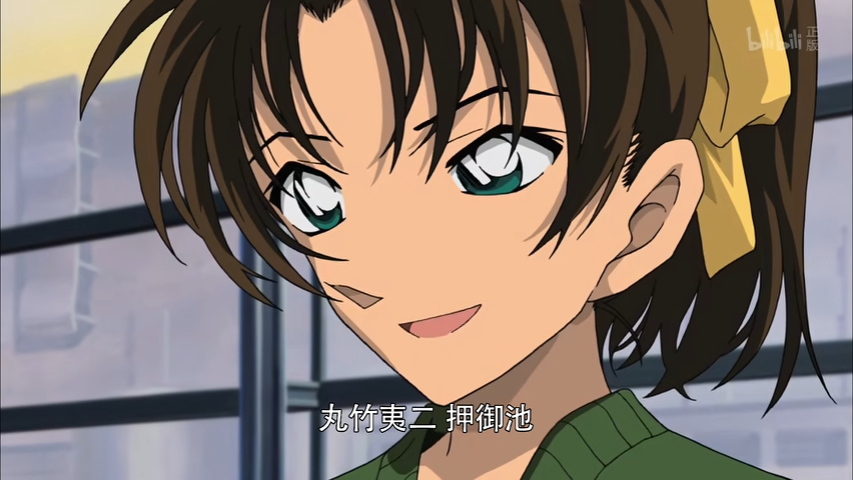
M7是儿玉兼嗣执导的最后一作剧场版，也标志着儿玉时代的最终落幕
世纪初的青山刚昌和南山南；随着满月篇的落幕，名柯漫画也走完了它的第一个十年
4.1 忙碌、彷徨而停滞的诹访道彦时代
2004年1月，【青山刚昌和高山南交往】，两人发现对方都是棒球巨人队球迷，都很喜欢推理，据青山自述他在看别人的推理作品的时候基本能猜到正确答案，而高山南则破解过现实中的案件；两人的分歧在于一起约会看电影的时候，南姐过于偏爱带血腥的电影，让他有点吃不消；同期漫画连载到沉默的航线，棒球梗给了小五郎和妃英理；
→ 同期满月篇动画化，此时【动画与漫画仅相差8个月，即将追上漫画进度】。
→ 由于读者反复提问阿笠博士是不是BOSS，青山在满月篇特意安排贝尔摩德发邮件糊弄BOSS时、阿笠博士在监听柯南和她的谈话，并安排博士亲自救回柯南；后续的访谈中明确阿笠不是BOSS，BOSS是彻头彻尾的坏人（实际上，第二话柯南跟阿笠博士表明身份的时候，少见地直呼其姓“这很简单，我亲爱的阿笠”，这个是经典的福华梗，【阿笠博士一开始的设定就是华生而非莫里亚蒂】，不存在后续改设定的说法）
→ 山本泰一郎走后TV监督由老搭档佐藤真人担任，开始推动动画数码化转型。【TV动画组结构发生较大的改变】，第一次新增浅井认（青山以前的漫画责编）为联合制片人，元老越智浩仁则退出了柯南制作组、富永真理接替须藤昌朋负责人设，中尾总子接替平出真弓负责色彩，画风开始有明显改变。
2004年4月，M8《银翼的魔术师》上映，本作应该是第一部尝试卖快兰的剧场版，预告片中截取了小兰向新一表白的片段，实际正片中小兰误以为对面是怪盗基德，不过仍未能延缓M7开始票房滑落的颓势；本作为山本泰一郎执导的第一部剧场版，山本泰一郎在角色选取上明显偏好基德，也过分依赖基德，其导演下没有基德和主线的几部剧场版票房都不理想；另一方面，山本早期剧场版的缺陷是无论推理水平高低，节奏感都明显有问题，更像是加长版的TV特别篇；
→ 同期《LOVEConan》访谈，针对“登场人物太迟钝了，也许大家都会想要应援吧”，青山回复“林原惠美也是这么说的，‘总觉得太迟钝了’，大概是觉得这不是自己的事情”；针对“希望哀酱和柯南能有什么的呼声很高呢”，青山回复“嗯嗯，啊啊~不行不行（笑）”。针对“那哀酱是喜欢柯南君还是工藤君呢？”，青山回复“喜欢小一点的吧？林原小姐说过，‘大家伙（给兰）没关系，小家伙就留给我吧’（笑）”。这也是部分极端读者掐头去尾截取的圣经“青山反对搞柯哀”来源
2004年5月，漫画连载至奇妙一家的委托-心存疑虑的小兰，小兰最后一次主动怀疑柯南的身份，并且阴差阳错下开始认定柯南喜欢小哀，某种程度上林原惠美许的愿望实现了（笑）；动画同期连载到本厅刑警恋爱物语5，高佐正式交往约会
2023-12-16 11:29 | NOCA左舷◎:造成了很长一段时间上色灰暗肤色奇怪的问题。
满月篇时期的OP13，此时TV组监督已经变更为佐藤真人
漫画中寻亲篇和满月篇是明显的对照，不过明美的夜空只有一轮缺月；这里不确定是不是同一片码头，宫野姐妹带着赴死的决心准备迎接自己的命运，柯南最终救下了小哀；
满月篇动画整体的氛围感是做的很好的，但还有一点问题，柯南拿麻醉手表劫持贝姐，漫画中贝姐的评价是【可爱的计划】，动画里模糊掉了这点，误导观众柯南这里是大优势局；其实不是的，柯南后面解释过自己的原始计划，无论是FBI还是黑衣组织的狙击枪都在他的计划之外，柯南自己的手牌真的不多，完全是硬着头皮顶上罢了
柯南能救下小哀，其超乎常人的能力是一方面，但更重要的是他坚决的态度。满月篇贝姐是绝对优势的一方，之所以要大费周章地搞双重谜案，是因为她想在不伤及柯南的前提下消灭小哀，所以要人为制造案件调走柯南（新一）。从柯南装成小哀开始，他就把自己的命和小哀绑在一起了，贝姐无法达成不伤及柯南的大前提，哪怕有狙击枪，一枪下去谁知道打死的是不是小哀。所以贝姐暂时放弃了对小哀的追杀。
满月篇动画整体的氛围感是做的很好的，但还有一点问题，柯南拿麻醉手表劫持贝姐，漫画中贝姐的评价是【可爱的计划】，动画里模糊掉了这点，误导观众柯南这里是大优势局；其实不是的，柯南后面解释过自己的原始计划，无论是FBI还是黑衣组织的狙击枪都在他的计划之外，柯南自己的手牌真的不多，完全是硬着头皮顶上罢了
柯南能救下小哀，其超乎常人的能力是一方面，但更重要的是他坚决的态度。满月篇贝姐是绝对优势的一方，之所以要大费周章地搞双重谜案，是因为她想在不伤及柯南的前提下消灭小哀，所以要人为制造案件调走柯南（新一）。从柯南装成小哀开始，他就把自己的命和小哀绑在一起了，贝姐无法达成不伤及柯南的大前提，哪怕有狙击枪，一枪下去谁知道打死的是不是小哀。所以贝姐暂时放弃了对小哀的追杀。
2023-10-17 02:51 | 💥尖峰时刻⚡:后来列车篇贝姐创造出了一个灰原不得不吃药变回志保的死局，结果柯南把基德这个变装bug拉进来了2023-10-18 13:05 | 梦紫冰蝶:满月能赢的关键其实还是在于柯主动把自己的命跟灰原绑一块，在“不想伤害柯”的大前提下，贝姐注定会输2023-10-23 03:05 | __灰原那傢伙:

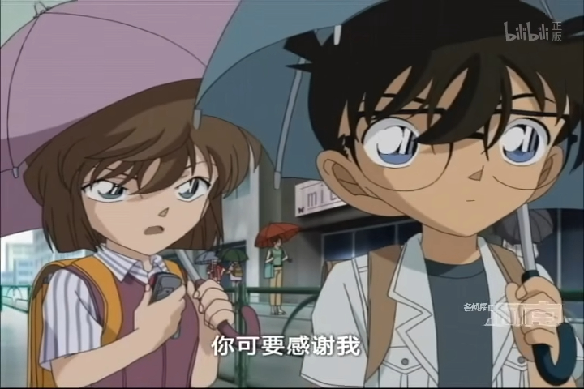
在小哀自己不知情的情况下，小兰开始认定柯南单恋小哀4.2 忙碌、彷徨而停滞的诹访道彦时代
2005年1月，青山刚昌带高山南见家长，决定在高山南生日时登记结婚；
→ 同期漫画连载黑色冲击篇及超秘密的上学路；青山刚昌和杉本优（宫本由美cv）聊天的时候被问到由美有没有男朋友，于是给由美加了男朋友的设定，还考虑声优意见给由美加了爱打麻将的设定；【青山回忆他会吸收声优们提出的有趣想法】，有时候画到漫画里时声优本人已经忘记了自己提过这个要求，会显得非常震惊
2005年6月，青山刚昌与高山南官宣，但因为太忙还没有排出婚礼时间；漫画稍晚些给高木和佐藤画了一场婚礼预演，【动画组可能是为了纪念两人结婚，创作了ED21《六月新娘~我的眼中只有你》】；
2006年4月，M10《侦探们的镇魂歌》上映，M6之后一路走低的票房短暂地回光返照了一下，编剧柏原宽司是动画组元老，TV第一集和后来真第一集的脚本家；漫画同期更新到越水七槻篇；两边都是服部平次+白马探（or怪盗基德）的模式
→ 稍早些，读卖电视台动画10周年访谈中，青山再次表示【结局已经确定】；回望过去十年，发现柯南从三头身的可爱角色变成了四头身的普通小孩子了。
2024-01-14 03:44 | 放假最快乐:没记错的话22年新娘选举灰原得第一，青山画的灰原第一的签名彩绘也是在六月
场外一些有意思的点子、构想也会被吸纳进漫画中，帮助塑造角色；青山还挺爱和声优们聊天的，声优提的很多建议他都会听
六月新娘~我的眼中只有你~

平次虽然嘴上嫌弃和叶笨，但也一直在依赖和叶；而和叶也对得起这份信任，足够敏锐果断
4.3 忙碌、彷徨而停滞的诹访道彦时代
2006年8月，高佐婚礼篇动画化；完成本篇后，【多位作监退出TV动画组】，川岛明子、田内亚矢子、加上早先的青野厚司、村中博美，人才流失问题加剧，佐藤真人让佐佐木惠子带着布姆兰组顶上，但还是频繁开始出现画风崩坏、工期混乱的情况；接下来的两年中，动画组剧集产出能力断崖式下滑
2006年10月，读卖电视台放送小粟旬版柯南真人剧，原作青山刚昌，企划诹访道彦，脚本渡边睦月，第一部为变小前，第二部为变小后；第一部是纪念柯南动画10周年，第二部安排在2007年12月放送，配合到时候要动画化的主线篇章（即同期漫画连载的红黑篇）；其中，小粟旬为青山刚昌亲自指名的工藤新一扮演者
虽然是出任务，但高佐还是完成了第一张婚纱照。这篇对名柯企划来说也是比较重要的篇章，几位制作组老人是留到这篇动画化完成之后才走的。
离开的理由包括不适应数码化转型，以及其他一些也许能猜到的场外因素。人才流失，尤其是作画人才流失导致从佐藤后期开始对外包的依赖程度越来越高，作画精细度受到了明显的影响。
离开的理由包括不适应数码化转型，以及其他一些也许能猜到的场外因素。人才流失，尤其是作画人才流失导致从佐藤后期开始对外包的依赖程度越来越高，作画精细度受到了明显的影响。
青山选取小粟旬的时候给出理由是和新一一样帅（笑）
但小粟旬确实很好地抓住了新一的一个细节特点，手插兜里，似乎漫不经心又游刃有余
但小粟旬确实很好地抓住了新一的一个细节特点，手插兜里，似乎漫不经心又游刃有余
4.4 忙碌、彷徨而停滞的诹访道彦时代
2007年2月，漫画红黑篇连载中途休更一周，青山刚昌刊载了自己最后一部短篇作品《Tell Me A Lie》，讲述能看破谎言的读心超能力者新井辉海与同学告别的故事；“新井”疑似取自高山南真名“新井泉”
2007年12月，【青山刚昌和高山南正式离婚，理由是两人工作繁忙】，缺乏相处时间；同期漫画连载到憎恨的蓝色火花，柯南和小哀第一次吵了两格的架；青山结婚这两年主要对应漫画中的基尔篇，涉及了复杂的红黑对决，最终离婚时已进入波本篇；
→ 这期间可以看到明显的大纲扩充痕迹，很多有关APTX4869、黑衣组织BOSS的主线线索被以潘多拉魔盒的名义冻结，转而围绕FBI等各方势力挖了很多新坑；稍早一点的两次问答中，青山收回了有关结局定好的发言，重新表示【结尾没有决定下来、只定好了框架、剩余卷数未知、粉丝不允许完结】
2008年5月，红与黑的碰撞艰难地完成了动画化；由于动画组没有意识到漫画中的伏笔，满月篇赤井秀一单手持枪改双手持枪的细节反而成了一个自作聪明的bug；制作来叶山对决时，池田叔真的以为他配音的赤井秀一要杀青了，南姐私下告诉他“其实还没有死哦”；
→ OP22《爱在黑暗中》是佐藤真人时期最后一部片头曲。相比于儿玉和山本时期较为简单的画面，佐藤时期的OP特别爱让柯南面对各种危险和挑战，最后再来一个大团圆合照，也算是契合红黑对决的氛围。本曲也是为了纪念不幸逝世的歌手坂井泉水，通过后期处理补完了泉水姐姐未来得及唱完的四句歌词；
→ 此后佐藤真人离开柯南制作组，TV组导演由化名回归后的越智浩仁担任，TV制作组大换血，负责人设的富永真理被免，改回须藤昌朋，海锋重信接替中尾总子负责色彩，但作画质量仍存在问题，尽管布姆兰组还留在了柯南制作组中（佐佐木惠子不再担任作监），同期也引入了新的外包团队WP组；TV动画第一次调整档期，但还在周一晚；
→ 作为TV导演，尽管完成了满月篇和红黑篇两大主线篇章的动画化，但佐藤真人受到的批评远多于认同，甚至有人认为佐藤要为名柯的衰落负责；其实抛开个人能力不谈，佐藤时期主要面对的是新世纪的两大挑战，技术层面的数码化转型冲击以及宏观层面的日本电视动画黄金时代落幕，共同导致了人员流失和经费拮据的恶性循环，不得不频繁依靠外包救场。
→ 在新时代很难再强求观众每周固定时段守着电视机贡献收视率，因为人手匮乏也不能学后世高产原创来吸引观众，只有主线突破、感情线突破、人气角色登场能短暂刺激收视率曲线。
→ 诹访道彦更忧虑的是名柯观众的年龄层问题，为当年的小观众长大之后自然退坑、粉丝群体不断萎缩而焦虑，迫切地在寻找解决方法。这也是上世纪末诞生的许多动画IP共同面对的难题。
→ 同期剧场版M12《战栗的乐章》也陷入了历史倒三的票房低谷；漫画同期连载到死罗神篇，这也柯南唯一一次意外服药变大，而且和危命、伦敦、红修不同，本次变大没有引起任何红黑角色的注意，是少见的非主线剧情。
2023-10-17 08:17 | stellayu1225:突然发现这位短篇的女主角的名字读法是てるみ（只找到了英文肉和一些日语的repo，都是这样说女主名字读法的），暗恋新一并且因为名字而被与灰原联系起来的星野辉美的名字读法也是てるみ。巧合吗？还是有别的原因……2023-10-18 06:30 | 不过期月饼♬:用自己老婆的姓氏给女主取名，肯定是故意的2023-12-25 07:55 | 风起天阑Ω:回复 stellayu1225 :不是，你把宫野志保的名字Miyano Shiho调过来就是Hoshino Miya，和星野辉美的名字读法相同2024-01-02 05:33 | stellayu1225:回复 风起天阑Ω :星野辉美的名字读法是Hoshino Terumi……2024-01-02 20:38 | 风起天阑Ω:回复 stellayu1225 :ほしの輝み转成假名可以是ほしのかがやみ，去掉重复的假名就是ほしのやみ，翻转过来就是みやのしほ，Miyano Shiho2024-01-15 08:28 | 热情的土豆丝儿:回复 风起天阑Ω :你说辉美的辉=光，yami=暗，这是光暗对照，会比“去掉重复的假名”这么生硬的理由好很多……2024-01-15 11:12 | 音子0806:回复 风起天阑Ω :輝き，没有輝み这个用法2024-01-15 11:13 | 音子0806:回复 风起天阑Ω :牵强到我尴尬症犯了，要不你再学学日语吧
Tell Me A Lie
2023-10-17 12:21 | 2014只蝴蝶飞过:戴眼镜的这个女孩总感觉好像高山南2024-01-14 03:54 | 放假最快乐:莫名联想到另一个作品里的读心能力者人设和灰原有点像，在名柯里还是志保朋友呢

佐藤真人和越智浩仁的过渡时期，也是TV动画最低迷的时期
同期的M12也惨遭票房滑铁卢，剧场版动画也一并走到了低谷；不过我还挺喜欢这部作品的，所以多放几张图
2024-01-14 03:56 | 放假最快乐:m12的大姐姐是事业强人，这部柯哀也挺好的，柯哀秒懂对方表达的含义
似乎又有许多楼被吞了
吞这么多。。。
71楼之后就到90了，这吞的离谱到家了
4.5 忙碌、彷徨而停滞的诹访道彦时代
2009年1月，【死罗神篇在漫画六个月后迅速动画化】，尽管越智浩仁没能解决WP组作画崩坏问题，但后篇《新一的真实身份与小兰的眼泪》的收视率依然超过了过去两年的所有剧集，【工藤新一成功挽救了TV动画的颓势】。
→ 与作画拉胯的正片相比，OPED获得了很高的评价，同期更新的OP25《Revive》由越智浩仁亲自分镜，讲述了一个新兰之间从变小开始到渐行渐远的苦情故事，中间插入了遇到的各方角色，结尾处由小兰为新一戴上眼镜。越智浩仁时期的ED则着重渲染新兰两人之间各种爱而不得，帮助打造了工藤新一的深情与苦情形象。
2009年3月，TV特别篇《鲁邦三世VS名侦探柯南》上映，纪念日本电视台55周年及读卖电视台50周年台庆；日本电视台（NTV）是读卖电视台（YTV）的母公司，也是鲁邦三世的制作方，正是借助这一契机才成功说服相关版权方达成联动，本篇导演龟垣一是柯南组的元老分镜师；STAFF表上，制片人中谷敏夫、日本电视台、原作者加藤一彦等鲁邦方排序在诹访道彦等柯南方之前。本篇获得了19.5%的罕见高收视率，【不死鸟鲁邦成功为柯南解围，证明了名柯这个IP依然存在生命力】
2009年4月，名柯TV第二次被调整档期，从周一晚移至周六晚，有了黄金档为收视率保底，但此后协调档期放送加长特别篇变得困难了许多；
→ 同期M13《漆黑的追踪者》上映，登场了大量漫画经典角色，【黑衣组织设定成功为剧场版续命】，本作创下了35亿票房记录，这也是前后近十年唯一一部票房超过M6的作品；
→ 同期漫画连载到白鸟警部樱花回忆篇，柯南和小哀在对话中吐槽“虽然一直说着什么最后的作品，可是这个电影还真能拖下去呀”
2023-10-17 09:55 | 蓝月哀:怪不得现在动画组还是这么喜欢在OP和ED中渲染小兰的悲情等待，路径依赖了属于是
死罗神篇的画风崩坏一直被人诟病，锅当然可以甩给负责外包工作的WP组，但深层的原因也许是经费不足，好钢必须要用在刀刃上

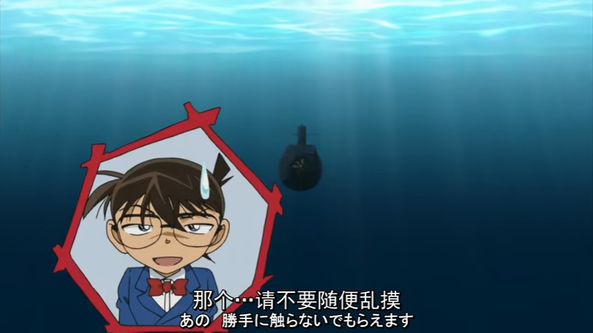
名柯与不死鸟鲁邦首次联动，取得了很漂亮的收视率成绩
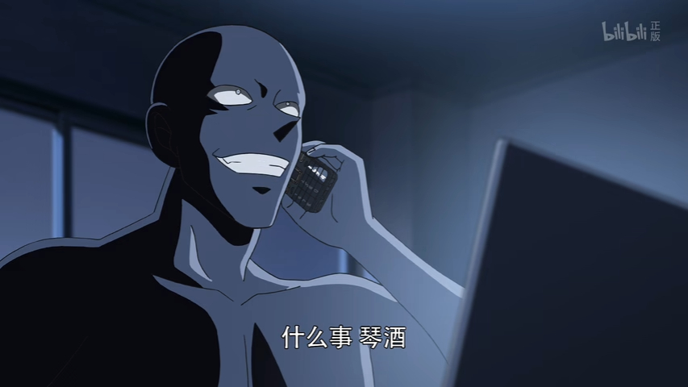
M13在票房上取得了很好的成绩，剧中用了大量原作主线梗；例如满月篇琴酒忘记新一、基尔篇七个孩子的邮箱地址、危命篇新一变大时遗留的痕迹、再会篇匹斯可的最终结局，凡此种种；这一点和先前的剧场版都是截然不同的，证明了很多读者还是关注着主线进展的，只是因为剧情一年年拖延而淡坑了
同期连载的漫画剧情，柯南和小哀替读者（也许还有作者？）发出了这声吐槽
2023-12-16 11:37 | NOCA左舷◎:发量被青山削弱到现在的水平
5.1 后三头时代：老人家、新思维、高达爱好者
2009年10月，神谷明（小五郎初代cv）退出柯南制作组，自述是因为合同问题和【信义仁】问题；据说可能是因为薪资谈判问题，神谷明一度提出降低自己的薪酬（他是当时动画组资历最深的“无等级声优”），提高CV组整体薪酬，而制作组一方采取了一些不太光彩的手段破坏了谈判；从TV553《The·审讯室》开始，由小山力接任小五郎声优；同期漫画连载到英理生日篇
→ 青山本身很喜欢神谷明代表性的烟嗓，还把小五郎声音沙哑这个设定融入到了原作漫画当中。在很多不同的访谈中，青山都提过小五郎和小哀是自己在作品内的嘴替，经常自比毛利小五郎。神谷明也是早期CV组的灵魂人物，和高山南搭档共同创造出了“沉睡小五郎”的经典形象。别离时，神谷明送给了小山力也一份麦酒，并鼓励他加油走下去，大家都是很好的人。此后，神谷明还关注着名柯这部作品，M23预告片期间甚至以旁白的身份短暂地回归了一次。
→ 由于TV连载时间已经很长了，再加上前几年的动画收入不景气，放大了很多内部矛盾；诹访道彦个人肯定是不愿意更换主创CV的，2007年宫村优子（和叶cv）因患病一度想要离开柯南制作组，是在诹访的请求下才同意留下。
2010年4月，M14《天空中的遇难船》上映；漫画同期为龙马篇；同期，《魔术快斗》动画化，首席制片人为诹访道彦（读卖电视台）和石山桂一（TMS），与原作相比剧情有比较大的改动，增加了很多原创内容
→ 从M14开始，片尾STAFF表中企划诹访道彦的名字后移一位，排在音乐大野克夫之后
→ 同期的问答中，时隔三年再次被问到结局问题，青山重新表示【结局已经确定，是HE，只是不知道什么时候能画到】
2010年8月，诹访道彦到访重庆，在访谈提到，一旦柯南的护照问题得以解决，未来的故事也有可能发生在中国，柯南也许会去重庆、上海、北京（2019年青山访谈时确实提到过想要画柯南在万里长城的故事）。面对结局问题时，诹访道彦提到【柯南不太可能很快变回工藤新一】
→ 同期漫画连载至伦敦篇，青山之前曾到英法两国进行取材。
2023-10-24 02:19 | Tottyu:神谷明这个其实挺奇怪的，按理说死小剧组的常驻里大部分都已经算是霓虹CV界收入最高的了（收入一般是年资+知名角色+是否指名-事务所抽成），当年没有那么便利也不知道是为了什么出头捏

事务所三人组；神谷明和高山南是早期CV组的两大核心；神谷明离开时曾经发博文解释过原因，但第二天就删了贴，所以这方面很多信息只能推测；山崎和佳奈对神谷明被迫离开事件也表达了自己的惋惜与不理解
TMS版老魔快，人物形象设计比较贴近同期的名柯，但剧情方面的很多原创改编就见仁见智了
青山之前还顺道去了法国取材，只是不知道巴黎会不会出现在漫画中，以及这个舞台是留给名柯的、还是留给魔快的
5.2 后三头时代：老人家、新思维、高达爱好者
2011年1月，青山刚昌参与电视剧的相棒演出，据说因此想在自己的作品中也致敬一下相棒拉窗帘的高光；漫画连载到和歌纸牌千钧一发，小哀视频诊断柯南感冒
2011年4月，M15《沉默的十五分钟》上映，山本泰一郎的重心准备转回TV组，剧场版逐步交棒给静野孔文；静野孔文是新制片人石山桂一从TMS请来的，石山本来想请静野执导TV组，但静野坚持选择剧场版制作组；
→ 静野孔文回忆柯南制作组的老人们一直在坚持过去形成的定式，他引入新思维最初受到了一片嘘声，磨合团队用了一段时间；【静野对青山的印象是，很少对剧场版提要求，只提希望能画什么、不提不能画什么】；
→ 【静野对柯南这部作品的定位是：爱情、推理、动作】；本部剧场版标志着柯南剧场版完成了从子供向到少年漫的转型，16-19岁观众首次达到38.1%的巅峰；到静野孔文离开柯南制作组为止，观众层年龄不断上升，最终20-29岁观众超过40%，成为主导观众群体，正式完成了柯南剧场版的转型
→ 同期新创华取得了名柯商品代理权，并开始争取影视播放和剧场版电影的代理权；2013年拿到独家影视播放权，2015年起实现中日同步放映；2018年起（据说和台湾版权方产生了矛盾）放弃台配，启动陆配；由于片源东拼西凑，导致中间一部分剧集出现了严重的画质、比例问题，由于刚好对应画风低谷的佐藤真人-越智浩仁时期，显得非常辣眼睛
2011年5月，伦敦篇动画化，柯南和小哀最终只是隔空交流，动画组还把有希子转述小哀的话给改了；
→ 漫画同期世良真纯登场，连续发生了三个案件；这是时隔四年、144话之后第二个出现的波本（高达）候选人、【停滞的主线开始前进】；
→ 与之伴生的小兰拉窗帘名场面则饱受争议（其实没啥好争议的，百卷人气故事投票的时候根本没人提这个，作为高达组大放异彩的时期，71卷、72卷、75卷、76卷、77卷、78卷都有前三十名的故事，唯独跳过了拉窗帘所在的73和74卷，至少没人把它当做高光，焦点可能是青山写不好是故意的还是无意的）；
2023-12-25 08:01 | 风起天阑Ω:静野孔文真的是天才，你再看樱井武晴这废物。。2024-01-13 11:51 | 贴吧用户_Q4eCR5W:回复 风起天阑Ω :鹦鹉第一部m17直接雷的73主动插手后面的剧场版
和柯南制作组的老人们相比，言必称欧美如何如何、深夜动画如何如何的静野孔文当然是个不受欢迎的异类；静野孔文能在制作组站稳脚跟，也离不开制片人石山桂一的支持。童年IP少年化、甚至青年化是同一时期很多作品的共同选择，但柯南的转型相对而言是比较成功的。从这个角度来看，石山桂一对形势的判断比诹访道彦更加准确。
伦敦篇是主线党和CP党讨论过很多遍的篇章，在此不再赘述；只提一点，动画中有希子转述的台词是被改过的；而且在漫画人物形象刻画上，青山重点描绘的就是角色灵动的眼睛；漫画中有希子虽然在笑，但眼神却有些悲伤；这一点反而被动画组忽视了
2023-10-17 10:09 | 蓝月哀:有希子这个悲伤的眼神戳中了我，漫画这个细节真好啊，再怎么潇洒的父母，也做不到对孩子的痛苦无动于衷啊。这一点上有希子和灰原非常相似，虽然这么担忧，仍然尊重新一自己的选择，会努力帮忙兜底和善后。2023-10-18 08:27 | 2014只蝴蝶飞过:回复 蓝月哀 :是啊，漫画有希子略带忧伤的眼神很戳我。再心大的父母也不能对自己宝贝儿子的痛苦无动于衷吧2023-10-18 13:20 | 梦紫冰蝶:漫画里有希子的表情真的画得很有意味，动画则完全没了灵魂
伦敦篇同期的ED38，讲了一个阿拉丁神柯的故事，创意其实很不错，但歌词太过苦情了
相棒男主角杉下右京
青山参与相棒的拍摄，并和杉下右京的饰演者水谷丰合影
相棒S1开头就是一个拉窗帘的故事，讲的很顺。炸弹犯田端是个很有条理的高材生，抓住倒霉的小熏当人质，要求和警视厅谈判，开展改革；警视厅接受不了这个条件，决定连带不知情的人质小薰一起射杀。
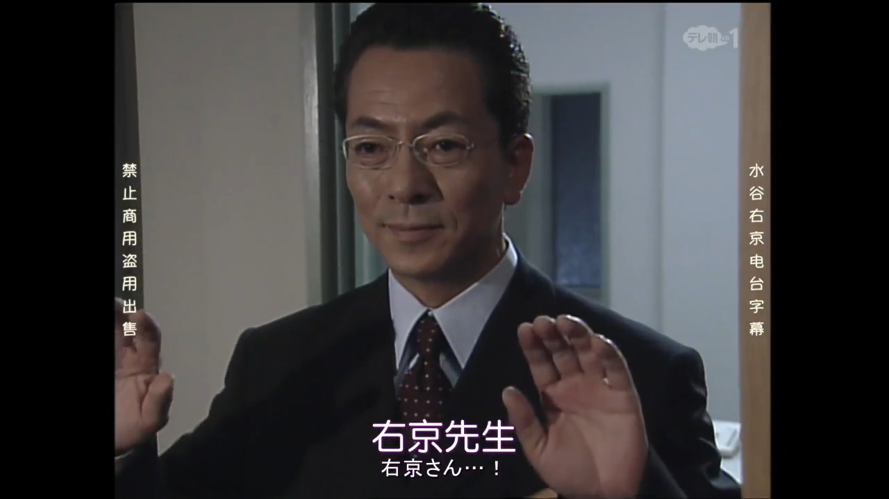
主角右京为了救下自己的搭档小薰（顺带看能不能保住炸弹犯的命），主动闯进现场把窗帘拉上了。右京和炸弹犯没聊几句，趁着他露出破绽，右京和小熏默契动手制服了炸弹犯，解决了炸弹危机。如果对标到柯南里的话，应该是这么一个IF线故事：
琴酒是警视厅总监，贝尔摩德是系长，波本是贝尔摩德的属下。若狭留美是丧心病狂的炸弹犯，她闯进警视厅的办公室里，抓住波本当人质，要求和琴酒谈判。琴酒拒绝谈判，安排狙击手解决问题；因为波本不知情，还挡在狙击镜前，狙击手没法儿开枪；琴酒说没关系，一起干掉。贝姐为了拯救波本，闯进办公室把窗帘拉上了，然后推理出炸弹犯若狭的心理诉求，安抚她的情绪。趁若狭放松警惕，贝姐和波本联手压制了若狭，把炸弹拆掉了。若狭留美被抓捕归案，事件顺利解决，琴酒批评了违反纪律的贝姐和波本，说下不为例。
事后，波本问贝姐，为什么要来救他。贝姐说：【因为我不想见到有人死掉，新一的话一定也会这么说的】。
琴酒是警视厅总监，贝尔摩德是系长，波本是贝尔摩德的属下。若狭留美是丧心病狂的炸弹犯，她闯进警视厅的办公室里，抓住波本当人质，要求和琴酒谈判。琴酒拒绝谈判，安排狙击手解决问题；因为波本不知情，还挡在狙击镜前，狙击手没法儿开枪；琴酒说没关系，一起干掉。贝姐为了拯救波本，闯进办公室把窗帘拉上了，然后推理出炸弹犯若狭的心理诉求，安抚她的情绪。趁若狭放松警惕，贝姐和波本联手压制了若狭，把炸弹拆掉了。若狭留美被抓捕归案，事件顺利解决，琴酒批评了违反纪律的贝姐和波本，说下不为例。
事后，波本问贝姐，为什么要来救他。贝姐说：【因为我不想见到有人死掉，新一的话一定也会这么说的】。
而名柯里实际表现出来的故事是：
①炸弹犯泽栗勋精神状况极不安定，他妹妹的案件本来和小五郎没有关系。正常来说，他应该直接委托小五郎调查这个案件，要动手报复可以等查出真相之后（漫画前期就有这种事件）。结果他在事务所劫持了一大帮无辜的人，难不成是炸弹比委托费便宜吗？
②柯南扮演的实际上不是IF故事里的贝姐，而是琴酒的角色。狙击手是他叫来的，听他指挥。没拉上窗帘前，柯南可以通过SIT的观察报告，结合手机里听到的声音确定现场情况。拉上窗帘之后他反而相当于盲了。
③在新一对现场局势有掌握、但是没动作的情况下，小兰先一步做出了行动，理由却是新一一定会这么做。这里其实形成了一个逻辑悖论。
④我相信如果可能的话，柯南也会尽量避免下令射杀泽栗勋，在泽栗勋情绪稳定的时候愿意多探一探他的底细，把狙击当成保底手段，确保自己的主动权。柯南不是神明，他每次做出决策都要先经过现实逻辑的思考。
⑤纯妹做出决策的时候，柯南也意识到了、但没有干涉。因为他固然不喜欢纯妹的解决方案，但纯妹在现场，比他更了解现场情况，也更有资格为自己的命运做出选择，所以柯南会认可纯妹的判断。
⑥但狙击手段被主动堵死之后，柯南原始的计划也没办法执行了，哪怕再有聪明才智，也必须开始赌运气。
⑦如果认真写这个故事的话，小兰的决策过程其实可以展开描写一下的，可以让她和炸弹犯有一定程度的沟通，让炸弹犯展现出柯南和纯妹没有看到的一面，辅助她做出决策，最后再证明小兰是对的。但实际上这个故事非常不用心，小兰的决策过程完全是信徒式的、非理性的。
其实不搞这个乱七八糟的致敬，把炸弹和窗帘都删掉，案件的逻辑反而会顺一些。泽栗勋拿枪威胁事务所，然后被小兰和纯妹制服。在等警察来的过程中，小兰听了泽栗勋的悲剧故事，心生同情，主动打电话给新一，新一再和纯妹展开推理对决。
①炸弹犯泽栗勋精神状况极不安定，他妹妹的案件本来和小五郎没有关系。正常来说，他应该直接委托小五郎调查这个案件，要动手报复可以等查出真相之后（漫画前期就有这种事件）。结果他在事务所劫持了一大帮无辜的人，难不成是炸弹比委托费便宜吗？
②柯南扮演的实际上不是IF故事里的贝姐，而是琴酒的角色。狙击手是他叫来的，听他指挥。没拉上窗帘前，柯南可以通过SIT的观察报告，结合手机里听到的声音确定现场情况。拉上窗帘之后他反而相当于盲了。
③在新一对现场局势有掌握、但是没动作的情况下，小兰先一步做出了行动，理由却是新一一定会这么做。这里其实形成了一个逻辑悖论。
④我相信如果可能的话，柯南也会尽量避免下令射杀泽栗勋，在泽栗勋情绪稳定的时候愿意多探一探他的底细，把狙击当成保底手段，确保自己的主动权。柯南不是神明，他每次做出决策都要先经过现实逻辑的思考。
⑤纯妹做出决策的时候，柯南也意识到了、但没有干涉。因为他固然不喜欢纯妹的解决方案，但纯妹在现场，比他更了解现场情况，也更有资格为自己的命运做出选择，所以柯南会认可纯妹的判断。
⑥但狙击手段被主动堵死之后，柯南原始的计划也没办法执行了，哪怕再有聪明才智，也必须开始赌运气。
⑦如果认真写这个故事的话，小兰的决策过程其实可以展开描写一下的，可以让她和炸弹犯有一定程度的沟通，让炸弹犯展现出柯南和纯妹没有看到的一面，辅助她做出决策，最后再证明小兰是对的。但实际上这个故事非常不用心，小兰的决策过程完全是信徒式的、非理性的。
其实不搞这个乱七八糟的致敬，把炸弹和窗帘都删掉，案件的逻辑反而会顺一些。泽栗勋拿枪威胁事务所，然后被小兰和纯妹制服。在等警察来的过程中，小兰听了泽栗勋的悲剧故事，心生同情，主动打电话给新一，新一再和纯妹展开推理对决。
5.3 后三头时代：老人家、新思维、高达爱好者
2011年7月，读卖电视台放送沟端淳平版柯南真人剧，包括特别篇和连续剧，纪念柯南动画化15周年，企划同样为诹访道彦；与小粟旬版相比，沟端淳平版彻底放弃了与漫画的兼容性，复刻、改编了很多漫画原作中的案件，例如危命的复活，将其移动到新一变小前，所以新一破完案回去接着和小兰吃饭了；剧版结局时工藤新一泪眼朦胧的情节引起了一些争议
2011年10月，漫画婚礼前夕篇，安室透登场；青山刚昌承认，连载到第二话时，因为觉得安室透太帅了，就把原定的黑波本（伤疤秀一）和预想中的公安角色合并形成了白波本；青山之前在和池田叔对话的时候谈到想要设计一个名叫安室透的角色，池田叔当即会意说猜到会请谁来配音了
2012年1月，和歌纸牌千钧一发动画化；越智浩仁为新OP33（即著名的《Miss Mystery》）设计了分镜，这也是他作分镜的最后一个OP，为表纪念，刻意把他之前画的所有OPED中的小兰形象都放了进来；漫画同期连载到一丁点也不原谅；
→ 从动画安室透登场开始，山本泰一郎越过越智浩仁直接执导TV动画；
→ 青山刚昌在对话日提到，构思了一个川中岛篇的案件，【同时预计连载不超过100卷】
2023-10-17 09:04 | 贴吧用户_JSbQW8C:回复 贴吧用户_J7eUEPR :原来偷Missy Mystery的人是他2023-10-18 13:24 | 梦紫冰蝶:难怪有那一堵照片墙……想起那op就窝火2024-01-10 21:52 | zyftri:感觉池田一听这个名字就立刻：“这个名字…是阿姆罗吗”2024-01-14 19:33 | 贴吧用户_0795E8E:偷miss mystery，一丁点也不原谅
青山自己还是蛮喜欢和歌纸牌相关元素的；同期很多翻盖机已经具备了视频通话的功能
2023-10-17 10:19 | 蓝月哀:这一段真好磕，灰原用高大上的医学术语吓唬柯南，柯南明明自己吐槽手机摄像头看不清喉咙深处，但还是配合着把手机摄像头对准了喉咙。他们俩这种挖个小坑等对方吃瘪的游戏真是永远玩不厌2024-01-13 19:14 | haibadaai_520:回复 蓝月哀 :这样搞真好啊！我可爱看了！
越智浩仁时期的ED43，同样讲了一个有关暗恋的故事
著名的OP33《 Miss Mystery 》，也是越智浩仁亲自设计的最后一个OP
2023-10-18 00:19 | 撩妹有糖吃😘:2024-01-13 11:54 | 贴吧用户_Q4eCR5W:我的信纸呜呜
无语😒
5.4 后三头时代：老人家、新思维、高达爱好者
2012年4月，M16《第十一个前锋》上映，新增制作人浅井认，【此后剧场版固定为三个制作人】，本作为诹访道彦（企划制作人、读卖电视台）、浅井认（小学馆）、石山桂一（TMS）；
→ 漫画同期更新逼近灰原的黑影、列车篇，时隔十年再次提到板仓卓的软件；诹访道彦定下M20的主题为黑衣组织
2013年1月，越智浩仁离开柯南制作组，其在任期间TV作画水平缓慢恢复，在有限的资源下完成了死罗神篇、伦敦篇动画化的重任，还曾导演过OVA9（著名的《十年后的陌生人》），OVA10和OVA11；越智浩仁被认为是名柯TV组最优秀的推理脚本家、密室之王、有见地的分镜大师、备受争议的动画监督；【此后TV动画组长期只有山本泰一郎一位监督】；佐佐木惠子和布姆兰组开始回归；TV中灰原哀的发色从越智后期的粉红色（疑似和色彩设计海峰重信有关）缓慢修正回山本时期的茶色，大约在水族馆篇前后彻底变回茶色。
→ OP35《TryAgain》标志着山本二期的开始，片头曲中久违地出现了一棵大树；不知为何，山本泰一郎分镜的OPED中总是会出现大树、草地、奔跑的三元素，被戏称为“山本树下山本草，山本草上柯南跑”；不过区别于山本一期的全家福风格，山本二期延续了越智浩仁时期的惯性，在OPED中强调叙事，除新兰二人外，其他角色的停留时间越来越短。
2023-10-18 08:48 | 科学魔法少女º:小学馆进制委是不是说明原著方的话语权更大了2023-12-25 08:07 | 风起天阑Ω:回复 科学魔法少女º :浅井认另一个重要身份是青山刚昌的前任责编
山本树下山本草，山本草上柯南跑
OVA11和稍晚一些的OVA12；不知是出于怎样的考虑，越智浩仁管理下的TV组将小哀的发色调整为粉色，同期山本泰一郎管理下的剧场版制作组则坚持了茶色的设定，疑似是因为两边色彩设计负责人的不同
5.5 后三头时代：老人家、新思维、高达爱好者
2013年2月，漫画羽田秀吉首次登场，时隔八年回收了由美男朋友的伏笔；
→ 同期《泡沫、蒸汽和烟》动画化，山本泰一郎回忆提到因为给冲矢昴和小哀加了多余的台词让青山不高兴了，此后【有关小哀的台词都要问过青山本人】；诹访道彦也感叹道灰原哀的地位很微妙，不知道说的哪一句话就可能会成为伏笔
→ 同年10月，领域外的妹妹登场，长相酷似灰原哀，当即引起读者警觉
2013年4月，M17《绝海的名侦探》上映，樱井武晴首秀，整了一出柯南流泪的大活；他在访谈中回忆，【是诹访道彦专门请他出山的】，因为之前没有看过柯南，樱井武晴当时还很惊讶地问“为什么是我？”；其实樱井之前是在读卖电视台《相棒》剧组，诹访在找专业编剧的时候先想到了他；静野孔文对樱井武晴的意见主要是他写的剧本太长了，觉得他还不习惯为动画创作脚本；
→ 青山刚昌在和柴崎幸（剧场版特邀CV）对谈时说“其实那不是眼泪哦”；柴崎幸自称是名柯超级粉丝，最喜欢的角色是灰原哀和怪盗基德
→ 访谈中还提到，【青山刚昌认可了石山桂一的观点】，在保留吸引儿童的有趣情节基础上，为剧场版加入了更多适合成年观众观看的元素；诹访道彦怀疑会不会有那么多大人来看，但此后的票房真的在不断上涨
波本三选一因为照搬了太多高达元素，导致很多人的身份失去了悬念，远没有满月篇的紧张感；青山在漫画中也确实存在用配cp戏的方式来发好人卡；但这里山本和诹访是产生了理解偏差；
山本泰一郎在制作组中以尊重青山意见闻名，尤其是对主线剧情发面一直在致力于还原漫画画面；但在除了主线之外的地方，山本也经常犯错误，会不小心删改掉某些伏笔，但青山对山本的意见会直说，会直接发Line和他抱怨漫改剧集的问题，也许是相信和他抱怨之后会有用
山本泰一郎在制作组中以尊重青山意见闻名，尤其是对主线剧情发面一直在致力于还原漫画画面；但在除了主线之外的地方，山本也经常犯错误，会不小心删改掉某些伏笔，但青山对山本的意见会直说，会直接发Line和他抱怨漫改剧集的问题，也许是相信和他抱怨之后会有用
以诹访道彦为首的三位制片人代表了读卖电视台、TMS和小学馆的利益；诹访道彦从读卖台请来樱井武晴，可能是希望他能成为第二个野泽尚；樱井武晴还是很偏爱各种深度社会话题的，热衷于描述同属好人阵营下各方的对立与矛盾；但他其实不太适合名柯这个IP，剧本深度既上不去又下不来，还经常为了剧情扭曲一部分角色设定
2024-01-15 11:28 | 音子0806:鹦鹉这水平还谈论啥社会话题，老愤青罢了。
山本二期的OP35《Try Again》和OP36《Q&A》，对应列车篇及之前的剧情
2024-01-14 04:18 | 放假最快乐:原来波本篇tv动画的某个op分镜也有这样的构图，冲矢昴站中间2024-01-14 04:21 | 放假最快乐:若朗之前有个神论，若狭在朗姆篇tv动画的某个op分镜站三人的中间 于是若朗因此认若狭＝朗姆，还拿贝尔摩德篇tv的某个op分镜里的新出说事，按照它们的逻辑看这个只会得出冲矢昴＝波本
6.1 回望过去、重塑过去、告别过去
2014年1月，名柯诞生二十周年，漫画连载到水族馆篇和风筝篇，借工藤新一之口补完了网中谜篇柯南没说完的话（用时13年），诞生了著名的双鲨梗；回收了第一话中新一请客的伏笔。
→ 稍早些时候，《鲁邦三世VS名侦探柯南TheMovie》在院线上映，与上次相比，浅井认（小学馆）也被列为企划制片人，排名在诹访道彦之后；在宣传时除了纪念两大电视台台庆，也在宣传纪念名柯诞生二十周年；本作出现了更多名柯中的角色，名柯制作团队有了更深入的参与，并取得了42亿日元的极好票房（高于同期的M17和M18），这次联动被制作组认为是【名柯剧场版人气转折的关键一步】
→ 青山刚昌在与加藤一彦的原作者对谈中自曝初恋是峰不二子
2014年4月， M18《异次元的狙击手》上映，这是第一部与主线联动的剧场版，透露冲矢昴即赤井秀一，漫画同期解开赤井假死之谜（用时7年），结束绯色篇，开启朗姆篇；
→ 这也是古内一成编剧的最后一部剧场版，稍后些，TV动画组播放了古内一成的最后一部原创《与J联赛选手的约定》，两年后，古内因癌症去世，M21以“inmemory of 古内一成”的形式表达悼念；
→ 同期的访谈中，青山刚昌称目前画得最开心的角色是世良真纯，否定BOSS是工藤优作，【同时暗示有两位母亲角色是姐妹】、在访谈中承认【灰原哀名字取自艾琳艾德勒】，在SDB30+问答中承认宫野艾莲娜名字也取自艾琳艾德勒，在SDB60+问答中承认【工藤新一的名字取自星新一】，承认人鱼岛篇是主线伏笔，否认黑衣组织与鸟取有关，在SDB70+问答中否认黑衣组织BOSS是小兰、贝尔摩德和白鸟任三郎
2023-10-17 20:54 | 改个名字真难☎:吹毛求疵一下《SDB30+》是2003年的（估计楼主是懒得细写了），而且里面写的是【Q40 灰原的名字是从两个女侦探来的，不过应该也有取自福尔摩斯喜欢的女性·艾琳吧？ 青山：…说得通耶！（笑）】，艾莲娜取自艾琳出自2014年的《SDB50+》2023-10-17 20:56 | 改个名字真难☎:此外青山刚昌明确说明灰原哀的哀来自艾琳艾德勒理论是有一个来自佐藤访谈，这个访谈有给佐藤的礼物这种描述2023-10-17 20:56 | 改个名字真难☎:BV1dx41167Kx 网页链接 NHK纪念福尔摩斯登场130周年的特别企划「乾杯シャーロック・ホームズ」，采访《名侦探柯南》作者青山刚昌，由灰原哀的声优林原惠美担任解说。 《福尔摩斯》与《柯南》人物相通之处，青山小时候的愿望，以及最喜欢的角色Best 3。2023-10-17 21:52 | 贴吧用户_J7eUEPR:回复 改个名字真难☎ :赞一个~感谢勘误~我个人是认为佐藤访谈那里是青山的明确表态，此前的问答里有关灰原哀和艾琳艾德勒的关系，青山的回复还有点打太极，所以选了2014的时间点~
和前作相比，本篇可动用名柯的角色更多了，通过鲁邦一行人的行动调动了柯南世界中的各路人马，也很好地平衡了两部作品的风格，展现了各自的角色魅力
纪念古内一成
M16和TV原创J联赛系列都是与真实世界中的J联赛进行的联动企划；剧场版中香田薰的故事线似乎没有收完，不知道古内一成原本的打算是不是把香田薰和真田贵大凑成CP
2024-02-20 00:41 | 贴吧用户_aGC8KNZ:超高中级的侦探

好帖插眼👀
太厉害了。请继续！！

6.2 回望过去、重塑过去、告别过去
2014年10月，《魔术快斗1412》重新动画化，总制片人为诹访道彦（读卖电视台）、植田益朗（A1，和诹访道彦是城市猎人时期的搭档），画风和TMS版差别很大，但优点是动画组原创较少
2014年12月，《史上最糟糕的两天》上映，纪念漫画连载20周年；编剧为《盗钥匙的方法》作者内田贤治，监督为TV组导演山本泰一郎；【青山刚昌称之为最喜欢的动画原创】，并主动为之宣传；
→ 内田贤治提到自己在通读漫画的时候【感受到了其中蕴含的悲伤】，他提到自己很心疼变小的女孩子，所以会喜欢小哀，当然他也喜欢小兰；
→ 林原惠美控诉内田贤治“本来在我心中哀对柯南的感情已经淡了，配完失踪事件之后却又再度点燃了对柯南的感情，真是的，你要怎么赔我！”；
→ 由部分读者反映不喜欢气冲冲的小兰，青山表示久违地看到了初期设定的小兰真好；剧本中应用了很多真人剧的手法，山本监督努力都还原了出来
2023-10-18 13:34 | 梦紫冰蝶:确实，这个篇章的小兰其实挺有早期漫画的感觉的，甚至复刻了很多经典表现（）2024-01-15 20:40 | 音子0806:读者不喜欢气冲冲的小兰这段xs
A1版魔快重新调整了部分人物的配色和画风，这一点褒贬不一；剧情上从快斗视角重置了部分柯南与基德交锋的案件，成功展现出了柯南身上BOSS般的压迫感；A1的制片人植田益朗算是诹访道彦的另一位老搭档

6.3 回望过去、重塑过去、告别过去
2015年4月，M19《业火的向日葵》上映；樱井武晴回忆，他一开始加入柯南制作组确实是想创作悬疑推理作品的，但很快就意识到了【观众更想看动作戏】；
→ M19创作过程中出了问题，导致剧本中大多数推理元素都不能用了，制作现场一片混乱；监督静野孔文力挽狂澜，加入了大量动作戏，最后不仅按时完成，票房还又创新高了。
→ M19难得被引入大陆放映，还取得了不错的票房，石山桂一和静野孔文一起到了上海参加首映式；静野孔文说，柯南电影能在中国上映是他的梦想；针对观众提出的推理戏变少的尖锐问题，石山桂一狡辩称电影风格一如既往、没有太大改变、反而增加了艺术成分。
→ 尽管发生了这么多事情，青山刚昌还是专门要求加入老奶奶点破小哀感情的桥段，【明确“我的眼中只有你”】。
2015年5月，漫画连载樱花班，青山刚昌认为，【小新一内心独白“不能慌，要像福尔摩斯一样表现出一副很厉害的样子”的那一页是自己出道以来画的最好的一页】，即使今后再也画不了漫画也一定要把它画出来；
→ 在这之前，青山住了一段时间院，期间南姐还来看过他；可能是因为身体原因，漫画连载速度第一次下滑
2016年1月，青山刚昌出道三十周年，漫画连载到真正的夫妻，【回收了十七年前（指和灰原哀一起在动画中艰难登场的1999年（笑））埋下的伏笔：A药名单、羽田浩司案】；
→ 贺年卡环节，青山【否定了柯南和小哀之间有亲戚关系】；之前的问答中，否定了有希子是有姐妹关系的母亲角色，没有否定玛丽
→ 动画连载二十周年，元老脚本家柏原宽司创作了最后一部TV原创海老藏篇；
→ 诹访道彦接受采访时提到【他认可青山“恋爱喜剧”的说法】，认为新兰就是青山所指的恋爱喜剧，也期待灰原和光彦之间有什么变化就好了；谈到印象最深的片段，诹访道彦提到OP8（柯南跳舞，黄昏别馆前后）和漫改“诹访道彦”被杀的那个案件；
→ 山本泰一郎提到了他和佐藤一起创作的OP4（著名的《转动的命运之轮》）、一人原画的ED10（也在黄昏别馆前后）、以及有挑战性的漫改剧集危命篇（剧情容量大）、3K篇（要配大量英文）
2023-10-17 20:13 | 🌱瑞琪:额，可是樱井这几部没一部推理方面能称得上尚可的吧2023-10-18 13:37 | 梦紫冰蝶:难怪73要在漫画里把他写成被害人2023-11-04 20:34 | 澸蒽就是了🍺:这一年的新年，我在日本鸟取和73见了面2023-12-25 08:11 | 风起天阑Ω:回复 🌱瑞琪 :社会派是这样的2024-01-13 11:58 | 贴吧用户_Q4eCR5W:诹访这啥理解2024-01-14 19:44 | 贴吧用户_0795E8E:找到头号战犯了，诹访道彦2024-01-15 20:45 | 音子0806:回复 风起天阑Ω :鹦鹉那个所谓的“社会派”水平也就是逗乐程度了

熬夜看完，给楼主点赞
樱井武晴说剧本出了问题，原来的推理元素用不了这个我是信的，他作为编剧把M19票房上的成绩都归功于静野孔文了，说他加了很多动作戏；静野孔文访谈的时候硬着头皮否认推理成分变少，称只是多加了一些艺术成分
2023-10-22 05:39 | 虬空:哈哈～(￣▽￣～)~🌞🐶的🌻这一部绝了，我那段时间半退坑，是真的去看推理的，甚至没太在意老奶奶和哀那一段……看完开始怀疑人生
在青山的主张下，M19加了一个细想之下很奇怪的情节，安排一位老奶奶点拨小学生的情感问题；可能主要还是为了【我的眼中只有你】这一碟醋
2024-01-14 19:46 | 贴吧用户_0795E8E:我的眼中只有你 是之前与高山南结婚的时候的题材2024-02-22 05:38 | 贴吧用户_J56e1ta:为了一碟醋，包了整盘饺子
青山对樱花班篇的重视程度极其高，原因不明。尤其是对后来的红修篇，他反而没有这么上心。
【“不能慌，要像福尔摩斯一样表现出一副很厉害的样子”】是青山一定要让小新一说出来的心声
【“不能慌，要像福尔摩斯一样表现出一副很厉害的样子”】是青山一定要让小新一说出来的心声
2023-10-18 13:39 | 梦紫冰蝶:73挺重视用樱花班来刻画新一的“侦探”属性的，特别是与福尔摩斯的关联性，但动画组显然偏离了重点2024-01-14 04:30 | 放假最快乐:可能是青山暗自得意通过此篇刻画铺垫好了新志初遇的暗线伏笔
海老藏篇是纪念名柯动画化二十周年创作的特别篇，编剧为元老脚本家柏原宽司
2023-12-25 08:13 | 风起天阑Ω:这是后期我最喜欢的原创特别篇，柏原宽斯笔下生花，这部特别篇改一改甚至可以排到前七部剧场版里面去
诹访道彦花费了很多心思的OP8，让柯南板着脸跳舞在当时还是一个很需要魄力的决策；山本泰一郎则提到了他当年一人原画的ED10，风格上确实独树一帜
2024-01-15 20:47 | 音子0806:山本一人原画啊？至少作画速度是还可以了。虽然有很多美术背景充数的段落
6.4 回望过去、重塑过去、告别过去
2016年4月，M20《纯黑的噩梦》上映，票房突破60亿；从访谈来看，是青山先画好了赤安打架的分镜，然后樱井武晴再开始创作剧本的；
→ 这也是安室透首次在剧场版登场，古谷彻向高山南征求了很多意见，以保证安室透在面对不同人时使用正确的语气；原创角色风见裕也作为高达组的一员在次年的漫画中转正
→ 漫画同期连载了三个跟羽田浩司案相关的事件，朗姆篇剧情铺开；动画同期跳过了樱花班篇，称已经错过了樱花季，将在第二年樱花盛开的时候再动画化；同期片尾曲更换为ED51，诹访道彦称自己经常在想乐曲的选择是以新一为主还是以兰为主，男女偏向哪一首曲子呢？他评价ED51描写的是思念着兰的新一
2016年12月，真第一集《变小的名侦探》上映，片头融入了水族馆篇和樱花班篇的元素，片尾参照漫画重新修正了广田雅美案的片段；
→ 同期，青山参加新加坡作家节，原计划把修学旅行放在新加坡，但因为背景太复杂放弃了；
→ 在访谈中，青山提到，会优先画自己想画的内容，不太在意读者或他人的意见，如果网站上有批评意见的话，他就不看那个网站了；针对银色子弹问题，青山表示不只有柯南，请读者先自行想象
→ 在读者对话中，【青山承认秀明是表亲，承诺小哀会有好结局】，同时回避了柯南是否还在aging的问题；【本年度漫画主线快速推进】，大冈红叶、若狭留美、胁田兼则、伊织无我相继登场，同时填了世良真纯（用时5年）、赤安矛盾（用时4年）两个坑，又挖了赤井务武失踪和苏格兰身份暴露两个更大的坑
2017年3月，樱花班正式动画化，青山刚昌【千叮咛万嘱咐一定要做好】；动画组把青山最喜欢的那句独白删掉了；青山生气地发Line质问动画组，还把这件事专门记进了即将出版的《青山刚昌30周年书》里
2023-10-17 21:20 | 贴吧用户_QbM415P:樱花班有什么最重要的独白被动画组给删掉了2023-10-17 21:58 | 贴吧用户_J7eUEPR:回复 贴吧用户_QbM415P :140楼截了一下那句独白~其实这里也有点奇怪，前后的内心独白都是保留下来的，不知道动画组为什么专门把那一句挑出来删掉了2024-01-15 20:49 | 音子0806:动画组到底什么脑回路2024-02-20 06:51 | 姚老盒:越看越迷糊了，说用心也用心，但总是把原作者最重要的东西无视掉
动画组也太无语了……带入青山真的心累
综合几人不同的回忆，M20的创作流程大约是这样的：
诹访道彦说，一定要有黑衣组织
青山刚昌说，在黑衣组织的基础上，一定要有赤安打架，而且要在摩天轮上打架，新加坡那个双轮式摩天轮的款式就不错；对了，再来一架鱼鹰，把摩天轮射倒
樱井武晴创作剧本，思考赤安是谁，为什么要打一架，为什么要坐摩天轮，跑去和青山问了很多黑衣组织的剧情设定，创作了一个只有坐在摩天轮上才能恢复记忆的组织成员库拉索，再让库拉索拦住倒掉的摩天轮
静野孔文：既然库拉索要失忆，不如在失忆前再来一段飙车戏
古谷彻：谢谢青山老师，我已经……燃起来了！
池田秀一：这一次不是高达，而是柯南……不过懂的人尽情享受就好，大家肯定会说“你们玩得开心就好”
诹访道彦说，一定要有黑衣组织
青山刚昌说，在黑衣组织的基础上，一定要有赤安打架，而且要在摩天轮上打架，新加坡那个双轮式摩天轮的款式就不错；对了，再来一架鱼鹰，把摩天轮射倒
樱井武晴创作剧本，思考赤安是谁，为什么要打一架，为什么要坐摩天轮，跑去和青山问了很多黑衣组织的剧情设定，创作了一个只有坐在摩天轮上才能恢复记忆的组织成员库拉索，再让库拉索拦住倒掉的摩天轮
静野孔文：既然库拉索要失忆，不如在失忆前再来一段飙车戏
古谷彻：谢谢青山老师，我已经……燃起来了！
池田秀一：这一次不是高达，而是柯南……不过懂的人尽情享受就好，大家肯定会说“你们玩得开心就好”
2023-12-25 08:15 | 风起天阑Ω:我突然觉得樱井武晴挺不容易的，这都不是话题作文，这他娘的是命题作文。。2023-12-26 00:19 | YarnKa:我真的笑死了，为了一碟醋包饺子2024-01-15 20:52 | 音子0806:回复 风起天阑Ω :不，这就是编剧的日常工作，日常帮大佬们填坑2024-02-22 12:32 | 47锛坆鈥唂鈥唌:草
真第一集修正了部分二十年前动画组更改过的剧情，尽量与漫画原作设定一致
7.1 诹访道彦退场
2017年4月，M21《唐红的恋歌》上映，导演为静野孔文、制片人为诹访道彦（企划制片人，读卖电视台）、近藤秀峰（小学馆）、石山桂一（TMS）；
→ 编剧大仓崇裕是小学馆请来的，起因是青山看到大仓执笔的电视剧《福家警部补的问候》，认为他适合写柯南；大仓对青山很尊重，剧本中涉及恋爱喜剧、关键角色台词的地方直接留白，备注“青山老师帮帮忙吧”；大仓自己是柯南粉丝，但在访谈中承认把全部剧集看完还是有点吃力，但他看过高达，很懂高达梗；
→ 本篇获第37届藤本奖；之后静野孔文离开柯南制作组；片尾STAFF表中，诹访道彦首次不再单列；【从下一作开始诹访道彦开始逐步交接剧场版工作】，交棒给下属米仓功人；
→ 作为彩蛋，本作中读卖电视台被炸毁，大仓崇裕编剧的TV原创哥美拉篇中，大楼终于重新建好，但原创角色米仓功人制片人不幸遇害（笑）
→ 同期，为纪念柯南漫画发行量超过2亿册，小学馆送给了青山刚昌一台定制版的黑色扎古
2017年12月，动画组年度回顾中，石山桂一（TMS）盛赞了扇泽延男的剧本，认为他【掌握了TV原创幽默推理的精髓】，成功塑造出了小孩子也能看得很开心的没出息的犯人，【青山对TV原创极其宽容】，从不定什么条条框框；谈到樱花班漫改时，石山说因为青山老师很重视，当初是全权交给山本泰一郎了；
→ 【诹访道彦则感慨时代确实变了】，他之前从没想过周边市场这么大，更没有预料到犯泽系列的成功；诹访道彦还提到自己对ED55 《渡月橋～君想ふ～》的贡献，为了把这部剧场版片尾曲从原来的平和主题改成更适合TV版的新兰主题花费了很多功夫；同年6月份的访谈中，诹访承认名柯的成功源于【小时候喜欢柯南的观众，长大了也没有从柯南毕业】
→ 同期据说青山刚昌生了一场大病，在画完挂件篇、红修篇和寻找玛利亚篇之后开始养病，在养病期间画了大结局的草稿；青山很喜欢红修篇的谜题，说这个悲剧的核心是主创精心隐藏的暗号被不知情的电影工作人员改没了、导致心意没能传达出去，他还提到连载时有读者提前解开了暗号并指出了杂志印刷错误，感慨读者们真的是好厉害；
→ 【漫画揭露乌丸莲耶即“那位先生”（用时17年）】；可能是因为身体原因，漫画连载速度第二次下滑；
2023-12-27 03:30 | 小石头小小😈:2024-01-14 14:15 | haibadaai_520:我就感觉渡月桥是独属于平和的
回复 小石头小小😈 :他可真是个小天才啊……2024-01-14 19:50 | 贴吧用户_0795E8E:诹访道彦终于滚了2024-01-15 20:54 | 音子0806:回复 贴吧用户_0795E8E :滚了，但没有完全滚
因为是平和主题，地点定在关西，所以M21开篇顺便炸掉了读卖电视台的大楼。
这也是静野孔文执导的最后一部剧场版，他自述在M18之后其实就感觉任务完成，准备离开了，但因为各方原因还是坚持到了2017年；静野孔文时期的剧场版成功扭转了名柯一直以来的颓势，但转型过程中也引起了很多非议，尤其是M17,M19,M20三部和樱井武晴搭档的剧场版，风评很差；
大体而言，出身TMS的静野孔文还是很擅长展现角色魅力的，他的动作戏实际上都是用来卖角色的，通过这种方法来提升观众年龄层；出身读卖的樱井武晴会写一些稍有深度的剧情，适合更高年龄层的观众观看；两人分开的时候还有不错的作品，但是两人搭档的时候经常是樱井崩角色静野崩逻辑
这也是静野孔文执导的最后一部剧场版，他自述在M18之后其实就感觉任务完成，准备离开了，但因为各方原因还是坚持到了2017年；静野孔文时期的剧场版成功扭转了名柯一直以来的颓势，但转型过程中也引起了很多非议，尤其是M17,M19,M20三部和樱井武晴搭档的剧场版，风评很差；
大体而言，出身TMS的静野孔文还是很擅长展现角色魅力的，他的动作戏实际上都是用来卖角色的，通过这种方法来提升观众年龄层；出身读卖的樱井武晴会写一些稍有深度的剧情，适合更高年龄层的观众观看；两人分开的时候还有不错的作品，但是两人搭档的时候经常是樱井崩角色静野崩逻辑
2023-10-18 08:49 | 2014只蝴蝶飞过:聚是一坨shi，散是满天星
小学馆专门挑了一台扎古当礼物，选黑色是考虑到了黑衣组织的配色
《渡月橋～君想ふ～》作为M21的主题曲受到了广泛好评，仓木麻衣2017年登台红白时就是献唱的这首歌曲，她是为数不多的从早期一直坚持到现在的柯南歌姬；动画制作组将渡月橋改编为更适合新兰主题的ED55，用在了涟漪篇前后
红修篇谜题的悲剧在于，几位主创在作品中留下了暗号，但暗号却被不知情的电影工作人员乱改改没了，导致其中蕴含的心意没有成功传达；让青山感慨万千的另一件事情是，他才连载到一半，就有读者get到了青山的想法，顶着印刷失误解开了暗号，让他不由得称赞读者真的好厉害
2023-12-24 19:23 | QuantumEntangl:影射动画组乱改
7.2 诹访道彦退场
2018年1月，骸骨篇动画化，由于朱夏公司此前欠了TMS/V1Studio的人情，接手了本篇的外包工作，旗下的青野厚司短暂担任了这集的作画监督，但发表声明称暂时没有回归柯南制作组的计划；
2018年4月，青山结束病休，漫画连载到黑兔亭篇，正式揭露灰原哀之父宫野厚司的名字和形象；
→ 同期，M22《零的执行人》上映，在青山的安排下添加了安室透驾驶着RX-7迎击天上掉下来的东西、我的恋人是国家等名场面，票房爆炸性增长，首次突破90亿
2019年1月，红修篇正式动画化；动画删掉了备用药相关情节；据说依据青山刚昌提议，动画组在红修篇结尾加了“我们可以算是，在交往了吧？”的短信对话场面
2019年3月，诹访道彦单独访谈时提到红修篇结尾“在交往了吧”的对话，请大家记住这句话，也像期待园子一样期待小兰的成长；而在和山口胜平的访谈中提到新的电影中新一和小兰去泳池了，敬请期待；
2019年4月，M23《绀青之拳》上映，观众发现泳池里的是快兰；【园子和阿真的创可贴被定性为护身符；漫画同期连载到野菜篇，若狭留美由护身符联想到羽田浩司，拒绝了四叶草护身符；】
→ 本作监督永冈智佳出身JC社，曾长期辅佐静野孔文，从访谈来看她在青山面前不太有主见，顺着青山的想法画了很多青山觉得有意思的情节；她回忆当初去新加坡踩点的时候房卡不小心掉进泳池里了，被迫从消防通道回到了自己的房间，这个桥段也被化用到了电影中；
→ 编剧大仓崇裕在访谈中提到，当初去新加坡踩点的时候，他和诹访道彦住一间房，晚上两人一起去了那个泳池；CV们对细节比较在意，高山南主动在和小哀的对话中加了一句“谢谢”
→ 同期TV组也接受了采访，监督山本泰一郎表示，小兰的人气能被肯定他很高兴，作为普通人的代表，小兰在动画中的存在感不论如何都很容易变弱；
→ 对于灰原，山本表示希望她能获得幸福，想要展现小哀的可爱之处，不太认可前几部电影里柯南对小哀理所当然的、不耐烦的态度；大仓崇裕应该是注意到了这份批评，在他写的下一部TV原创哥美拉篇中，专门添加了小哀埋怨柯南和柯南买章鱼烧哄小哀的剧情
→ 总作监须藤昌朋则表示，兰哀之间更喜欢小兰，因为小哀的发型画起来很麻烦，作为画师与之搏斗了二十年；须藤提到OP中柯南和小兰经常出现漫画原作没有的忧伤表情，因为找不到参考画起来比较辛苦，期待青山有朝一日能给些意见；
→ TMS特意引入了老牌编剧浦泽义雄，【他的脚本震惊了TV组，扇泽延男惊呼“柯南里可以这样做吗？”】，山本泰一郎也感叹到还原浦泽的剧本是一件很有挑战性的工作；浦泽义雄表示自己有很多存货，但一年只写两次；稍晚一些，相对高产的大和屋晓也加入TV组
2023-10-29 13:42 | 乱洒青菏🌿:突然觉得 哀在oped里出场少是不是因为难画………预算有限………2023-12-26 23:29 | 队友thet☞:浦泽义雄对柯南也是个不可多得的人才2024-01-15 21:02 | 音子0806:回复 乱洒青菏🌿 :确实，画兰不容易走形因为有个大角和大眼睛无辜表情还有苦情形象深入人心。毛利兰符号性很强，但哀符号性很弱，水平一般的动画师把握不好，没办法把哀的特征概括成每个动画师都能画出来的标准。2024-01-15 21:03 | 音子0806:这个须藤笑死我了hhh 哀有那么难画吗我怎么感觉是他水平不行，比这难画的人设动画界也挺多的啊
骸骨篇的灰原哀，以及灰原哀之父宫野厚司
2024-01-14 14:22 | haibadaai_520:不愧是亲爹的画风
不就是一颗卫星吗，看我……
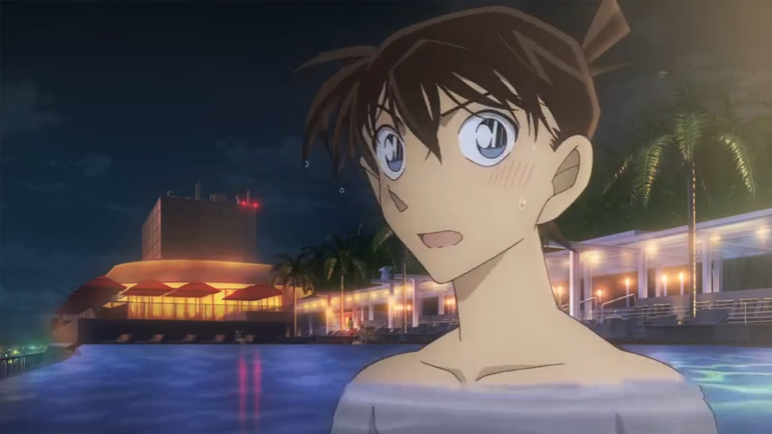
M23的预告诈骗

同期连载的野菜篇明确了护身符的排他性和在主线剧情中的标志性作用
这里额外宣传一下我在米花学园吧发的两篇主线分析文章，分别讨论了羽案中使用A药为什么会流血，以及将棋护身符代表的含义，还请有时间的吧友也关注一下~或许能提供更多可供讨论的新思路
这里额外宣传一下我在米花学园吧发的两篇主线分析文章，分别讨论了羽案中使用A药为什么会流血，以及将棋护身符代表的含义，还请有时间的吧友也关注一下~或许能提供更多可供讨论的新思路
2023-12-24 19:30 | QuantumEntangl:给个链接
7.3 诹访道彦退场
2019年5月，声之日，青山刚昌在接受采访时表示，最喜欢高山南的声音
→ 执掌名柯企划23年、有着“日本动漫教父”之称的【诹访道彦退休离开柯南制作组】，当然，距离他在原作漫画中被杀害也过去了23年；
2019年6月，寻找玛利亚篇动画化；漫画连载到古董盘子篇；两个篇章都提到了【二十年前被动画组魔改过的《月亮、星星与太阳的秘密》】（当年这两集诹访道彦是企划制片人，儿玉兼嗣是总监督，山本泰一郎是监督，越智浩仁是构成），并强调小哀当时还没有登场
2019年8月，漫画开始连载大冈红叶挑战书，诞生了著名的甜甜圈名场面。
→ 为准备鸟取柯南祭的活动，诹访道彦悄悄跑到动画录音室，刚好碰到了高山南、池田秀一和古谷彻，拍了一张合照拿去作宣传；池田秀一和古谷彻在工作人员中人气很高
→ 稍晚些的声优对谈里，池田叔和古谷彻提到2019年也是高达40周年，感觉名柯里有很多复刻高达的地方，高山南说“因为青山老师真的非常喜欢高达哦”；池田叔表示在高达里吃的瘪都在名柯里补回来了；池田叔认可古谷彻40年宿敌的说法，还提到和古谷彻一起打高尔夫球的事，古谷彻斤斤计较“我就赢了两局”，池田叔笑着说“每次把输赢次数都记下来，你这人好烦呀”
→ 由于山本泰一郎不小心歪了楼（他的理解下列车篇安室透是想救宫野志保的，但被赤井秀一扔的手榴弹干扰了，所以安室透会因为志保死亡怪罪秀一），声优们开始讨论宫野家和赤安之间的关系，古谷彻表示“原来如此，小时候和安室很亲密的明美，长大之后成了赤井的恋人，所以明美就是拉拉是吧”，高山南打岔“明美和秀一是表兄妹，他们之间该不会没有什么亲戚往来吧？这一点值得深思呢”
→ 其实2019年的问答日中青山明确表示赤安矛盾和宫野家、和明美没有关系
2024-01-10 22:14 | zyftri:我尽然在名柯访谈里磕到了鸭骡（2024-01-14 19:56 | 贴吧用户_0795E8E:清算开始2024-01-15 21:06 | 音子0806:看来山本是个降志党可能性的微存2024-01-15 21:07 | 音子0806:明美是拉拉笑死了😆
其实抛开个人恩怨；我一度怀疑过《月亮、太阳和星星的秘密》是主线篇章，如果灰原哀见到阿笠定子的画像可能会触发主线剧情，所以才要反复强调
2024-01-14 19:57 | 贴吧用户_0795E8E:月亮太阳星星肯定是新志题材的东西
不过也确实有网友在嗑降明IF线
其实如果认清漫画和动画的定位差异，认识到柯南TV动画本质对标海螺小姐、蜡笔小新，而不是其他悬疑推理作品这个事实的话，我还是能接受浦泽义雄的故事的。认真说的话，他的笔下柯南和小五郎、柯南和小哀的互动都很灵动，个人认为浦泽义雄的恋爱商店街比樱井武晴的对准灰原的摄像头写的更好一点
2023-10-18 09:07 | 蓝月哀:恋爱商店街的那段只呈现了一半的柯哀对话简直抓住了精髓，好磕就在于留白的那一半，cp的美感是作者的笔力与读者的想象力共同塑造出来的。和M26联动的摄像头篇的糖就太直白太硬了2023-10-23 03:34 | __灰原那傢伙:同意。摄像头太工业了2023-11-04 20:28 | 我有嘉賓00:天才餐厅（噔噔咚）2024-01-13 12:04 | 贴吧用户_Q4eCR5W:回复 蓝月哀 :鹦鹉就写不来柯南的感情戏，新兰也写不好，不如别写2024-01-15 21:09 | 音子0806:摄像头无论是从sr角度来看还是ca角度来看还是单从编剧专业的角度来看都是💩
楼主牛逼
想一次性看完，楼主加油
打卡打个卡，感谢楼主的整理，按时间线下来清晰了好多唔，73不容易，难怪会逆反好看
一贴子看下来，感谢整理
楼主是码完了吗？
按时间顺序整理这么多东西真的不容易啊，辛苦了。我还以为老贼不怎么在乎动画呢，原来漫改的质量他还是会在乎的呀
按时间顺序整理这么多东西真的不容易啊，辛苦了。我还以为老贼不怎么在乎动画呢，原来漫改的质量他还是会在乎的呀
8.1 青山刚昌大魔王时代
2020年7月，受疫情影响的TV动画复播，STAFF表中拿掉了企划诹访道彦的名字；
→ 出身MADHOUSE、长期在柯南制作组工作、此前曾执导过OVA12（短篇衍生作《传说中的球棒的奇迹》）的【镰仲史阳开始担任TV动画监督，排名在山本泰一郎之后】；同期漫画更新到冲野洋子与阁楼密室；
2021年3月，TV动画999集，儿玉兼嗣短暂以化名参与了原创剧集的分镜；TV动画1000集，尽管山本泰一郎不太愿意，但还是服从以米仓功人（读卖）为首的动画组整体意见，重置了对名柯ip延续至今至关重要的月光篇。
→ 担任顾问的【诹访道彦高度评价月光篇是柯南、小兰、小五郎三人关系的范本】。
→ 同期，M24宣传pv发布，截取了柯南喊兰的片段。
2021年4月，M24《绯色的子弹》上映，观众发现柯南先喊的是灰原；漫画同期连载到时间胶囊篇，确定五年前访谈中提到的又一发银色子弹为灰原哀；
→ 樱井武晴在访谈中提到，他最初想写的是赤井秀一的故事，专门设计了在超导轨道里用银制子弹狙击的戏码；青山刚昌要求赤井一家全数登场，樱井武晴感觉驾驭这么多他不熟悉的角色十分困难；青山刚昌要求多加一点动作戏，让冲矢昴和世良真纯打起来，樱井武晴吐槽为什么突然要在这个时候打起来，把动作戏自然融入剧本是不可能的；
→ 在本部剧场版之后，【石山桂一（TMS）、米仓功人（读卖）相继离开柯南制作组】。
2024-01-15 21:11 | 音子0806:居然能拉到疯屋的人，算是摆脱裙带关系的第一步了2024-02-22 12:40 | 47锛坆鈥唂鈥唌:草，那段奇怪的打戏原来是73的主意吗
OP51 烈焰红唇 标志着后诹访道彦时代的开启
TV1000话，重置了整个动画化企划的转折点，或者说某种意义上的起点，月光篇；
二十五年弹指一挥间，当已经大名鼎鼎的毛利小五郎来到这座岛上时，仿佛一切又回到了开始，他还是那个刚刚打出名气的糊涂侦探、柯南还是那个光想着破案的毛头小子、小兰与新一也只是刚刚别离。当然，我们都知道一切都已经不一样了，过去只可用来缅怀，却永远无法留驻。
名柯这部作品一路走到今天，不单单是青山刚昌，许多人都献出了自己的青春，诹访道彦、儿玉兼嗣、静野孔文、大野克夫、古内一成、柏原宽司、坂井泉水，以及其他许多人，都留下了自己的痕迹，也许有些是好的影响，也许有些不是。
动画化本身是一个再创作的过程，如果STAFF如果能get到原作想要传达的东西，去芜存菁，其实是能发挥出1+1>2的效果的。例如原作中带有搞笑漫气质的柯南舔drug，旧版TV改成了闻一下，新版TV就改成了观察一下。
至于未来，正如片尾所说：
特别鸣谢 感谢所有热爱柯南的人 下个事件再见
二十五年弹指一挥间，当已经大名鼎鼎的毛利小五郎来到这座岛上时，仿佛一切又回到了开始，他还是那个刚刚打出名气的糊涂侦探、柯南还是那个光想着破案的毛头小子、小兰与新一也只是刚刚别离。当然，我们都知道一切都已经不一样了，过去只可用来缅怀，却永远无法留驻。
名柯这部作品一路走到今天，不单单是青山刚昌，许多人都献出了自己的青春，诹访道彦、儿玉兼嗣、静野孔文、大野克夫、古内一成、柏原宽司、坂井泉水，以及其他许多人，都留下了自己的痕迹，也许有些是好的影响，也许有些不是。
动画化本身是一个再创作的过程，如果STAFF如果能get到原作想要传达的东西，去芜存菁，其实是能发挥出1+1>2的效果的。例如原作中带有搞笑漫气质的柯南舔drug，旧版TV改成了闻一下，新版TV就改成了观察一下。
至于未来，正如片尾所说：
特别鸣谢 感谢所有热爱柯南的人 下个事件再见
M24的预告诈骗
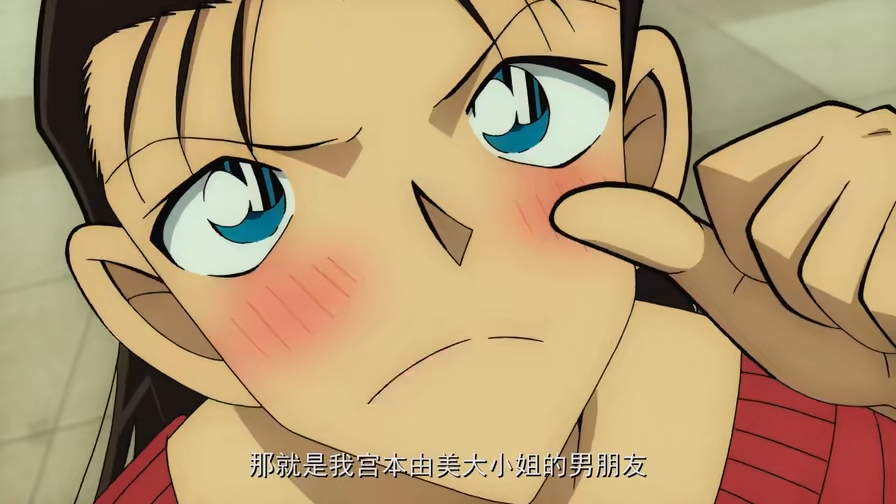
代表小学馆的近藤秀峰在制片人中排名第一，其余两人代表读卖和TMS；樱井武晴的抱怨我倒是能理解，我其实也很想问一句，为什么非要在这时候打起来，不过青山老师开心就好（笑）
但是樱井自己想到的这个八百里开外一枪打倒敌人的剧情我其实觉得也挺离谱的
2023-12-25 08:24 | 风起天阑Ω:说真的我越看越觉得樱井武晴好难哦，这怎么安排啊，命题作文也太难写了2024-01-15 21:14 | 音子0806:主要是青山心里其实有“为什么”的答案，但他就是不愿意理性总结一下告诉别人
8.2 青山刚昌大魔王时代
2021年5月，漫画连载风之女神篇，打电话名场面；青山久违地画了柯南的滑板戏，之前的访谈中一直在说漫画中基本不会使用滑板了，画起来太麻烦了
2021年10月，《零的日常》和《犯人犯泽先生》决定动画化，青山刚昌为原案协力和原作，【企划中排名第一的均为泽边伸政（小学馆），制片人中排名第一的均为近藤秀峰（小学馆）】。零茶的导演为小坂知，犯泽的导演为大地丙太郎；
→ 漫画同期连载手账篇，呼应了警校篇佐藤和松田、安室的初遇。
2022年4月，M25《万圣节的新娘》上映，导演满仲劝是TMS调来的，原本不是柯南制作组的成员，他自称其实没怎么看过柯南，只做过OP62分镜之类简单的工作，心里不是很有底，但委托方说正是这样期待他能做出全新的柯南、所以勉强答应了；编剧大仓崇裕熟练地把留了空的剧本拿给青山刚昌填空。

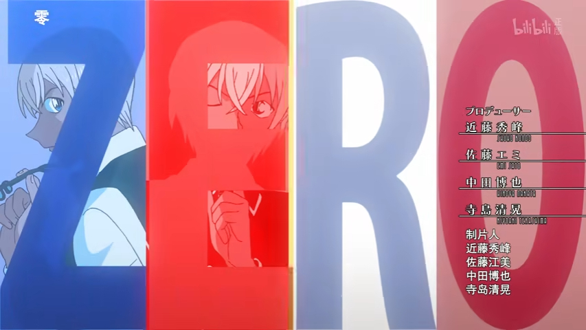
区别于当初的两版魔术快斗，犯泽和零茶的制片人中都是小学馆的代表排名第一；诹访道彦当初一度误判了犯泽的价值，只能说时代毕竟不一样了
从M25开始，石山桂一和米仓功人也不再担任剧场版的制片人了
青山是说想让柯南在剧场版里多用一用足球来着；包括滑板也是，在原作漫画中出场的频次已经越来越少了，因为滑板戏画起来比较麻烦；随着话语权的增长，青山确实可以把很多漫画里不好实现的想法放进剧场版里了
2024-01-15 21:16 | 音子0806:老贼时代，自己不想画的丢给别人
8.3 青山刚昌大魔王时代
2023年1月，《灰原哀物语》上映，和之前的两个总集篇SP一样，编剧为元老脚本家宫下隼一；列车篇部分崩坏的画面进行了一定修正；青山刚昌称“奇迹般可爱的科学家”是他想出来的；
→ 同期的对话日中，青山提到目前正在画怪老头系列；认定名柯中驾驶技术最高的是卡迈尔；被问到魔术快斗结局的时候称已经想好；认定快斗是简单的好色，新一是闷骚；被问到绯色篇末尾那句变装家人的对话时，再次否认柯南和小哀是亲戚；被问到片头曲画面的时候诚恳地说，要问问TMS的人，他不太清楚这个方面；被问到柯南的那颗备用药会给谁使用的时候说敬请期待
2023年2月，ED68《如饥似渴》发布，封面惯例由山本泰一郎布局；ED分镜则由小坂知担任；这个组合之前就创作过ED60《Sissy Sky》。相对的，下半年发布的ED69《...and Rescue Me 》分镜工作则由新锐薦田かなえ接手，但明显是选取了和ED60同一片沙滩。
2024-02-22 11:52 | 第7个伯言:家人，但不是血亲，那是什么关系？2024-02-22 12:42 | 47锛坆鈥唂鈥唌:家人……
奇迹般可爱的科学家
8.4 青山刚昌大魔王时代
2023年4月， M26《黑铁的鱼影》上映，导演为立川让（出身MADHOUSE的自由身），制片人为近藤秀峰（小学馆）、汐口武史（读卖电视台）、冈田悠平（TMS）；
→ 其中立川让是从小看柯南长大的八零后，曾执导过M22，在青山刚昌的期望下这次也担任了剧场版导演；近藤秀峰十几年前就当过青山的漫画责编；
→ 樱井武晴声称自己创作了一个不带感情戏的剧本，然后青山刚昌再往进写感情戏，【将柯南的眼镜定性为护身符，还刻意提到柯南想吃那颗被TV组删掉的备用药】；
→ 由于M20上映访谈时，诹访道彦曾提到M25与黑衣组织有关、会有更加庞大的场面，有人猜测《黑铁的鱼影》就是原定的M25，当初就确定由樱井武晴执笔，但由于诹访的离开使得企划发生了巨大的改变
→ 受疫情影响，CV们只能分开录音，高山南被安排有了单独和林原惠美一起录音的机会（其实现场还有直美的CV华哥来着，她们是三个人一起录的），南姐回忆，她和惠酱隔着一张塑料帘子，录音过程中有时会通过眼神来交流，录音结束时也是两个人对视一眼松一口气；
→ 同期的声优访谈中，高山南说“柯南和小哀是命运共同体，这两个人之间谁也插不进去，不管是博士还是小兰”，林原惠美打趣“那让谁吃点药，把她也变小，变成三个人？”，南姐无奈“喂喂…还是快点把解药做出来吧（笑）”；稍早些的访谈中，南姐形容柯南和小哀之间像“已经相处了几十年的夫妻一样”，提到自己喜欢戴眼镜那个名场面，觉得两人和博士的表情都好可爱。
→ 谈到对小哀的印象时，南姐回应“我个人的印象，从柯南的视角是看不到的……我觉得小哀很可爱，看到她以小小身躯拼命努力的样子，就会很想保护她”
→ 访谈时，高山南忍不住吐槽，黑衣组织还有潜水艇，这个组织规模到底有多大呀！明明第一集的时候琴伏两人的角色名还是黑衣男A和黑衣男B的，她当时还觉得组织规模应该不大。谈到剧场版剧情时忍不住想，潜水艇就这么沉了，开潜水艇的工作人员能不能跑出去呀？谈到对角色的感受时，南姐表示看不透琴酒在想什么，但觉得伏特加还比较有人情味，说不定会在关键时刻说出“大哥，对不起！我做不到！”
→ 谈到原作剧情的时候南姐很在意一点，贝尔摩德对怪盗基德过于熟悉了，怀疑是因为列车篇还是其他什么缘故，感慨贝尔摩德是个深不可测的女人。而她在意的另一点是朗姆潜伏在寿司店的真实目的，怀疑朗姆想监视的不是毛利侦探事务所，而是波本。
2023年5月，退休中的诹访道彦发博【庆祝M26突破百亿】，宣称【名侦探柯南正走在半路上】；
→ 一部分新兰党怒斥他早已生锈，主张青山的本意是好的，都是诹访道彦这样无脑捧哀的老柯哀党执行歪了；
→ 一部分读者忧虑他是否指柯南还要再连载下一个三十年。
2023-11-05 01:31 | 贴吧用户_G2ePyyV:看到他早已生锈绷不住了2023-12-16 11:05 | 贴吧用户_aJNC1A4:诹访也生锈了2023-12-27 03:40 | 小石头小小😈:伏特加：大哥，对不起！我做不到！我真的笑死2024-01-15 21:21 | 音子0806:这么看起来青山是真的很讨厌諏访啊，什么后续都不告诉他，对方祝贺也不在乎。完全就是婉拒交流的状态。
怎么突然没了这么多楼
又吞楼了
如今的南惠
从各种意义上讲，M26都是一部值得被记住的作品；按日本网友的评论，M26商业上的成功，是因为小时候看柯南长大的那一批人长大了，并愿意继续关注柯南、为柯南消费，摆脱了诹访道彦曾经忧虑的童年党退坑问题。而观众愿意这么做的理由，是因为电影讲了一个好的故事，塑造了很多立得住的人物，引爆了二十余年各种草蛇灰线的伏笔，戳破了压抑近一千话的感情，传递了作者想要传达的心意，回应了真正热爱这部作品的读者的期待。
而商业上的成功，证明青山大魔王的思路是正确的，也让抱有疑义的各个利益相关方不由自主开始生锈。并且，这种模式并不是无法复制的。也许在不久的将来，我们还会看到下一部M26，看到青山想要继续讲述的故事。既然整个企划在低谷时不被允许完结，那就将它带上反对者难以想象的巅峰后，再表演一个华丽的谢幕吧。
（正文完）
而商业上的成功，证明青山大魔王的思路是正确的，也让抱有疑义的各个利益相关方不由自主开始生锈。并且，这种模式并不是无法复制的。也许在不久的将来，我们还会看到下一部M26，看到青山想要继续讲述的故事。既然整个企划在低谷时不被允许完结，那就将它带上反对者难以想象的巅峰后，再表演一个华丽的谢幕吧。
（正文完）
2023-10-22 07:04 | 虬空:说得好好，草蛇灰线，伏脉千里，73剛昌，不愧是你2023-12-16 13:08 | Brandon_ngu:写的真棒2023-12-19 06:45 | 贴吧用户_0KWKPMK:感谢楼主，名柯有您了不起2024-02-20 07:13 | 姚老盒:看完了写得特别特别好😭谢谢老师
后续的碎碎念
还有一些楼没被放出来，可能要再等一段时间，不过正文基本完整了，再往后的事情也不算历史，而是新闻了。
后面想到了可能会再发一些别的碎碎念。目前的感想是：
①南惠是真的
②青山的初心是快斗，但不要和他谈初心（笑）
③柯南已经算青山和高山南共同的孩子了吧？南姐的声音真的会让角色变聪明。
④小学馆应该还是想完结的，毕竟漫画没办法一直连载下去；但读卖和TMS真不一定
还有一些楼没被放出来，可能要再等一段时间，不过正文基本完整了，再往后的事情也不算历史，而是新闻了。
后面想到了可能会再发一些别的碎碎念。目前的感想是：
①南惠是真的
②青山的初心是快斗，但不要和他谈初心（笑）
③柯南已经算青山和高山南共同的孩子了吧？南姐的声音真的会让角色变聪明。
④小学馆应该还是想完结的，毕竟漫画没办法一直连载下去；但读卖和TMS真不一定
2023-11-21 03:11 | 贴吧用户_QZaJaKK:南惠真的甜2024-01-15 21:22 | 音子0806:读卖现在是放手状态了吧？按照制片人顺序，反而危机比较严重的是小学馆，除了芙莉莲和柯南根本没办法和magazine jump竞争……
好
支持！写的真好！
感谢楼主，好文
感谢楼主，之前以为新兰OPED是因为外包的原因所以才这么多，结果还真就是内部有这么多看不清楚市场的人
中午看了一半，现在睡前看完了。写的真好
感谢楼主梳理~
感谢楼主 整理这么多辛苦了
楼主辛苦了！写得太好了 思路好清晰
感谢楼主整理！逻辑通顺，文笔流畅，脉络清晰忍不住在大半夜还是一口气追完了
忍不住在大半夜还是一口气追完了楼主辛苦
看完我也想说，快斗现在真的还是亲儿子么，漫画和剧场版都被垫得太厉害了
感谢楼主～
有些帖子就该颁奖
好详细
好帖，感谢整理，辛苦！
所以OP这么高强度新兰戏甚至毛利家还有少侦只能说明一点，TMS对柯南这个ip的定位应该就是小新那种无限水单元剧的模式。而只有毛利家和少侦能做到这一点。
谢谢楼主～
爱看这些彩蛋，好有意思
写得太好了！谢谢楼主看得很开心
太厉害了，太强了，谢谢楼主
感谢楼主整理
完整的看完了，写的很好，谢谢楼主
青山是真的爱这句
感谢楼主！看完之后更爱名柯这个ip了
太好了
今天（11月5日）看到微博上【还我毛利兰】那个热搜，刚好想起来补一点点内容（笑）毕竟抛开逻辑不谈，TV动画乃至原作作画质量下降也是值得每个观众读者惋惜的事情
本图出自TV原创《爱与决断的冲击》，就是前文提到的小兰手机被踩坏、引发巨大争议的那个绑架案件。作监为青野厚司，这也许是今天有人提到希望青野厚司回归的原因之一。青野会偏向于把人物脸收小、眼睛放大、线条柔和化、增加发量和发丝精细度，在贴近漫画画风的同时作一定程度的夸张。
不过，青野的画风也有一定的局限性，其实不太擅长画小兰，他的后期的作品，有几张小兰画的其实是略崩的。
后续青野厚司离开名柯制作组十多年，这期间其实青山刚昌和青野厚司的画风都在变化；骸骨篇青野厚司短暂回归时，其实可以看出他笔下的角色形象已经与整体风格有了明显的差别，只靠他一个人的话也没办法重现十几年前的荣光。不过，在人均谢顶的动画后期，能看到角色们的头发短暂的变多，还是挺让人开心的（笑）
2023-12-26 21:18 | 黄尘战神:著名的百亿解乐了，喜欢造谣2024-01-13 12:13 | 贴吧用户_Q4eCR5W:查了一下关注还真是麻将我去
微博上被挂的这个“兰黑”其实不是胡昱（其实台湾出身的胡昱老师也不太可能用微博），而是另一位也参与了《风之女神》制作的国人原画师。因为胡昱老师树大招风，被有些微博用户混为一谈了。
2010年诹访道彦在重庆访谈中提到，很多华人画师会以外包或其他形式参与名柯动画的制作；也是由于原画师来自五湖四海，而且人员变动还比较频繁，才需要作画监督进行调整，确保画风统一。在这之上还有总作画监督（一般兼任人物设计），目前TV组的总作监为须藤昌朋，也是动画组的元老，在其负责下作画质量还算稳定。
须藤昌朋早期的人物设计也是偏圆润的（世纪末很多电视动画流行这样的风格），中后期开始强调角色的棱角，来突出角色的帅气程度。不过，作为总作监，须藤昌朋要考虑的不光是怎样画比较好看，也包括怎样画性价比更高。前文提到，须藤在访谈中说的“和灰原哀的头发搏斗了二十年”恐怕是真心话。 名柯动画中的很多角色都有经费充足版和经费不足版的不同形象。须藤昌朋省经费的方法主要就包括把曲线变直线、把头发视作整体少画细节发丝、加宽人物脸盘假装头发很多（笑）这些因素共同导致了名柯特色的尖下巴和犀牛鼻，在侧脸状态下更加明显。
须藤昌朋早期的人物设计也是偏圆润的（世纪末很多电视动画流行这样的风格），中后期开始强调角色的棱角，来突出角色的帅气程度。不过，作为总作监，须藤昌朋要考虑的不光是怎样画比较好看，也包括怎样画性价比更高。前文提到，须藤在访谈中说的“和灰原哀的头发搏斗了二十年”恐怕是真心话。 名柯动画中的很多角色都有经费充足版和经费不足版的不同形象。须藤昌朋省经费的方法主要就包括把曲线变直线、把头发视作整体少画细节发丝、加宽人物脸盘假装头发很多（笑）这些因素共同导致了名柯特色的尖下巴和犀牛鼻，在侧脸状态下更加明显。
2024-01-13 12:10 | 贴吧用户_Q4eCR5W:这位不会是麻将吧，关注他十来年了😂不过只记得他是透粉2024-01-15 21:27 | 音子0806:回复 贴吧用户_Q4eCR5W :麻将是哪一位求科普一下2024-01-15 21:29 | 音子0806:兰黑不兰黑的……你都进制作组了就得过作监那一关，不可能刻意画差砸自己招牌的，不好看还是人设本身的问题。百亿姐们有没有社会工作常识啊。2024-01-15 23:58 | 贴吧用户_Q4eCR5W:回复 音子0806 :神北小毬，老画师了，15-16年给舰r画过几个女鹅的，再后来就看到他发一些自己参加动画原画的作品了

其实这也是因为青山确实属于那种“会把鼻子画出来的漫画家”，他曾经在访谈中提到自己的画风借鉴了千叶彻弥的鼻子、加藤一彦的嘴和安达充的眼睛。不过，在原作漫画中，各个角色的鼻子只是稍微尖一点而已，没有到犀牛的程度。
千叶彻弥的《明日之丈》
加藤一彦的《鲁邦三世》
安达充的《TOUCH》
毕竟创作是一个复杂的过程，也要考虑到经费、人手、各方顾虑等因素，也许不能总是尽如人意
我想，还我XXX的口号可以喊；但让名柯无条件把XXX还给粉丝们，听起来还是有点怪；毕竟日漫的手工业成分还比较高，比较依赖作者和各位主创，暂时做不到把XXX角色切割出来作为单独ip卖给别家公司的操作，何况买家未必是新海诚呢（笑）
我想，还我XXX的口号可以喊；但让名柯无条件把XXX还给粉丝们，听起来还是有点怪；毕竟日漫的手工业成分还比较高，比较依赖作者和各位主创，暂时做不到把XXX角色切割出来作为单独ip卖给别家公司的操作，何况买家未必是新海诚呢（笑）
2024-01-15 21:31 | 音子0806:柯南算是数码化比较早的一批了，因为节省成本，tms、读卖都是老资本家了，不可能给你做高质量动画的。深夜档动画就不一样了，基本上还是很需要人才的，无论是手绘还是3d，都需要有审美有经验的人。2024-01-15 21:34 | 音子0806:天天喊“还我童年”但是一张bd都没买过，一点动画工业知识都不了解，这样的白痴根本讲不通的，不如直接让了2024-01-20 02:28 | aizengin33:回复 音子0806 :2024-01-21 04:53 | 音子0806:回复 aizengin33 :买不买另说，毕竟也不方便买，无所谓了。但啥都不懂也不尊重原作者真的很讨厌。
M26并不是简单的剧情回收，也是一次成功的商业冒险。自此以后，柯哀结局的障碍几乎已经完全不存在了。
2023-11-07 01:07 | neon年年:这种商业价值应该可以说一句，新兰成不了柯哀输不了了
深度好文，感谢lz！
收藏
好好好我想看的就是这个
为啥好多楼不见了
深度好文Mark
如果柯哀要有代餐的话，那只能是南惠（正论）
看完了，楼主好厉害
可以补一下中间的吞楼咩，七十多到九十那里全没了
2024-01-11 05:20 | 贴吧用户_J7eUEPR:文字部分应该都发上来了~每一层有序号和时间~中间吞掉的是配图，是贴的过程中的写的，因为没有备份不太好补了，不过不影响理解~
楼主好厉害啊，一连串看下来真的好感慨，感觉见证了一个作品的成长，一路磕磕绊绊走到今天着实不易
cu
哇！希望楼楼一定要备份好怕吞贴
好怕吞贴牛哇
哇哦
太牛了看了一个下午啥也没干